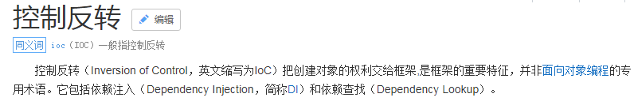

Spring第一天第1章 Spring 概述 1.1 spring 概述[了解] 1.1.1 spring 是什么 1.1.2 Spring 的发展历程 1.1.3 spring 的优势 1.1.4 spring 的体系结构第2章 IoC 的概念和作用 2.1 程序的耦合和解耦**[理解]** 2.1.1 什么是程序的耦合 2.1.2 解决程序耦合的思路2.1.3 工厂模式解耦 2.1.4 控制反转-Inversion Of Control 第3章 使用 spring 的 IOC 解决程序耦合 3.1 案例的前期准备[会用] 3.1.1 准备 spring 的开发包3.1.2 创建业务层接口和实现类3.1.3 创建持久层接口和实现类 3.2 基于 XML 的配置（入门案例）[掌握] 3.2.1 第一步：拷贝必备的 jar 包到工程的 lib 目录中3.2.2 第二步：在类的根路径下创建一个任意名称的 xml 文件（不能是中文） 3.2.3 第三步：让 spring 管理资源，在配置文件中配置 service 和 dao3.2.4 测试配置是否成功3.3Spring 基于 XML 的 IOC 细节[掌握] 3.3.1 spring 中工厂的类结构图3.3.3 spring 的依赖注入 第4章 附录 4.1Spring 配置文件中提示的配置[会用]第二天第1章 案例：使用 spring 的 IoC 的实现账户的CRUD1.1 需求和技术要求 1.1.1 需求 1.1.2 技术要求 1.2 环境搭建 1.2.1 拷贝 jar 包1.2.2 创建数据库和编写实体类1.2.3 编写持久层代码1.2.4 编写业务层代码 1.2.5 创建并编写配置文件1.3 配置步骤 1.3.1 配置对象1.4 测试案例 1.4.1 测试类代码1.4.2 分析测试了中的问题 第2章 基于注解的 IOC 配置 2.1 明确：写在最前 2.2环境搭建 2.2.1 第一步：拷贝必备 jar 包到工程的 lib 目录。 2.2.2 第二步：使用**@Component** 注解配置管理的资源2.2.3 第三步：创建 spring 的 xml 配置文件并开启对注解的支持2.3 常用注解 2.3.1 用于创建对象的 2.3.2 用于注入数据的 2.3.3 用于改变作用范围的： 2.3.4 和生命周期相关的：(了解) 2.3.5 关于 Spring 注解和 XML 的选择问题 2.4spring 管理对象细节 2.5spring 的纯注解配置 2.5.1 待改造的问题 2.5.2 新注解说明 2.5.3 工程结构图第3章 Spring 整合 Junit[掌握] 3.1测试类中的问题和解决思路 3.1.1 问题 3.1.2 解决思路分析 3.2 配置步骤 3.2.1 第一步：拷贝整合 junit 的必备 jar 包到 lib 目录 3.2.2 第二步：使用@RunWith 注解替换原有运行器3.2.3 第三步：使用@ContextConfiguration 指定 spring 配置文件的位置 3.2.4 第四步：使用@Autowired 给测试类中的变量注入数据3.3 为什么不把测试类配到 xml 中 第三天第1章 AOP 的相关概念[理解] 1.1 AOP 概述 1.1.1 什么是 AOP 1.1.2 AOP 的作用及优势 1.1.3 AOP 的实现方式 1.2 AOP 的具体应用 1.2.1 案例中问题 1.2.2 问题的解决 1.2.3 新的问题 1.2.4 动态代理回顾 1.2.5 解决案例中的问题第2章 Spring 中的 AOP[掌握] 2.1Spring 中 AOP 的细节 2.1.1 说明 2.1.2 AOP 相关术语 2.1.3 学习 spring 中的 AOP 要明确的事 2.1.4 关于代理的选择 2.2 基于 XML 的 AOP 配置 2.2.1 环境搭建 2.2.2 配置步骤 2.2.3 切入点表达式说明 2.2.4 环绕通知 2.3 基于注解的 AOP 配置 2.3.1 环境搭建 2.3.2 配置步骤 第四天第1章 Spring 中的 JdbcTemplate[会用] 1.1JdbcTemplate 概述 1.2JdbcTemplate 对象的创建 1.3spring 中配置数据源 1.3.1 环境搭建1.3.2 编写 spring 的配置文件1.3.3 配置数据源 1.4JdbcTemplate 的增删改查操作 1.4.1 前期准备 1.4.2 在 spring 配置文件中配置 JdbcTemplate1.4.3 最基本使用 1.4.4 保存操作 1.4.5 更新操作 1.4.6 删除操作 1.4.7 查询所有操作 1.4.9 查询返回一行一列操作1.5在 dao 中使用 JdbcTemplate 1.5.1 准备实体类 1.5.3 第二种方式：让 dao 继承 JdbcDaoSupport第2章 Spring 中的事务控制 2.1 Spring 事务控制我们要明确的 2.2 Spring 中事务控制的 API 介绍 2.2.1 PlatformTransactionManager 2.2.2 TransactionDefinition 2.2.3 TransactionStatus 2.3基于 XML 的声明式事务控制（配置方式）重点 2.3.1 环境搭建 2.3.2 配置步骤 2.4 基于注解的配置方式 2.4.1 环境搭建 2.4.2 配置步骤 2.4.3 不使用 xml 的配置方式 第3章 Spring5 的新特性[了解] 3.1 与 JDK 相关的升级 3.1.1 jdk 版本要求： 3.1.2 利用 jdk8 版本更新的内容 3.2 核心容器的更新 3.3 JetBrains Kotlin 语言支持 3.4 响应式编程风格
Spring
第一天
第1章 Spring 概述
1.1 spring 概述[了解]
1.1.1 spring 是什么
Spring 是分层的 Java SE/EE 应用 full-stack 轻量级开源框架，以 IoC（Inverse Of Control： 反转控制）和 AOP（Aspect Oriented Programming：面向切面编程）为内核，提供了展现层 Spring MVC 和持久层 Spring JDBC 以及业务层事务管理等众多的企业级应用技术，还能整合开源世界众多 著名的第三方框架和类库，逐渐成为使用最多的 Java EE 企业应用开源框架。
1.1.2 Spring 的发展历程
1997 年 IBM 提出了 EJB 的思想
1998 年，SUN 制定开发标准规范 EJB1.0
1999 年，EJB1.1 发布
2001 年，EJB2.0 发布
2003 年，EJB2.1 发布
2006 年，EJB3.0 发布
Rod Johnson（spring 之父）
Expert One-to-One J2EE Design and Development(2002)
阐述了 J2EE 使用 EJB 开发设计的优点及解决方案
Expert One-to-One J2EE Development without EJB(2004)
阐述了 J2EE 开发不使用 EJB 的解决方式（Spring 雏形）
2017 年 9 月份发布了 spring 的最新版本 spring 5.0 通用版（GA）
1.1.3 spring 的优势
方便解耦，简化开发
通过 Spring 提供的 IoC 容器，可以将对象间的依赖关系交由 Spring 进行控制，避免硬编码所造 成的过度程序耦合。用户也不必再为单例模式类、属性文件解析等这些很底层的需求编写代码，可
以更专注于上层的应用。
AOP 编程的支持
通过 Spring 的 AOP 功能，方便进行面向切面的编程，许多不容易用传统 OOP 实现的功能可以通过 AOP 轻松应付。
声明式事务的支持
可以将我们从单调烦闷的事务管理代码中解脱出来，通过声明式方式灵活的进行事务的管理，
提高开发效率和质量。
方便程序的测试
可以用非容器依赖的编程方式进行几乎所有的测试工作，测试不再是昂贵的操作，而是随手可
做的事情。
方便集成各种优秀框架
Spring 可以降低各种框架的使用难度，提供了对各种优秀框架（Struts、Hibernate、Hessian、Quartz 等）的直接支持。
降低 JavaEE API 的使用难度
Spring 对 JavaEE API（如 JDBC、JavaMail、远程调用等）进行了薄薄的封装层，使这些 API 的 使用难度大为降低。
Java 源码是经典学习范例
Spring 的源代码设计精妙、结构清晰、匠心独用，处处体现着大师对 Java 设计模式灵活运用以
及对 Java 技术的高深造诣。它的源代码无意是 Java 技术的最佳实践的范例。
1.1.4 spring 的体系结构

第2章 IoC 的概念和作用
2.1 程序的耦合和解耦**[理解]**
2.1.1 什么是程序的耦合
耦合性(Coupling)，也叫耦合度，是对模块间关联程度的度量。耦合的强弱取决于模块间接口的复杂性、调 用模块的方式以及通过界面传送数据的多少。模块间的耦合度是指模块之间的依赖关系，包括控制关系、调用关系、数据传递关系。模块间联系越多，其耦合性越强，同时表明其独立性越差( 降低耦合性，可以提高其独立性)。耦合性存在于各个领域，而非软件设计中独有的，但是我们只讨论软件工程中的耦合。
在软件工程中，耦合指的就是就是对象之间的依赖性。对象之间的耦合越高，维护成本越高。因此对象的设计应使类和构件之间的耦合最小。软件设计中通常用耦合度和内聚度作为衡量模块独立程度的标准。
划分模块的一个准则就是高内聚低耦合。
它有如下分类：
（1）内容耦合。当一个模块直接修改或操作另一个模块的数据时，或一个模块不通过正常入口而转入另一个模块时，这样的耦合被称为内容耦合。内容耦合是最高程度的耦合，应该避免使用之。
（2）公共耦合。两个或两个以上的模块共同引用一个全局数据项，这种耦合被称为公共耦合。在具有大量公共耦合的结构中，确定究竟是哪个模块给全局变量赋了一个特定的值是十分困难的。
（3） 外部耦合 。一组模块都访问同一全局简单变量而不是同一全局数据结构，而且不是通过参数表传递该全局变量的信息，则称之为外部耦合。
（4） 控制耦合 。一个模块通过接口向另一个模块传递一个控制信号，接受信号的模块根据信号值而进行适当的动作，这种耦合被称为控制耦合。
（5）标记耦合 。若一个模块 A 通过接口向两个模块 B 和 C 传递一个公共参数，那么称模块 B 和 C 之间存在一个标记耦合。
（6） 数据耦合。模块之间通过参数来传递数据，那么被称为数据耦合。数据耦合是最低的一种耦合形式，系统中一般都存在这种类型的耦合，因为为了完成一些有意义的功能，往往需要将某些模块的输出数据作为另一些模块的输入数据。
（7） 非直接耦合 。两个模块之间没有直接关系，它们之间的联系完全是通过主模块的控制和调用来实现的。
总结：
耦合是影响软件复杂程度和设计质量的一个重要因素，在设计上我们应采用以下原则：如果模块间必须存在耦合，就尽量使用数据耦合，少用控制耦合，限制公共耦合的范围，尽量避免使用内容耦合。
内聚与耦合
内聚标志一个模块内各个元素彼此结合的紧密程度，它是信息隐蔽和局部化概念的自然扩展。内聚是从功能角度来度量模块内的联系，一个好的内聚模块应当恰好做一件事。它描述的是模块内的功能联系。耦合是软件结构中各模块之间相互连接的一种度量，耦合强弱取决于模块间接口的复杂程度、进入或访问一个模块的点以及通过接口的数据。 程序讲究的是低耦合，高内聚。就是同一个模块内的各个元素之间要高度紧密，但是各个模块之间的相互依存度却要不那么紧密。
内聚和耦合是密切相关的，同其他模块存在高耦合的模块意味着低内聚，而高内聚的模块意味着该模块同其他模块之间是低耦合。在进行软件设计时，应力争做到高内聚，低耦合。
我们在开发中，有些依赖关系是必须的，有些依赖关系可以通过优化代码来解除的。
请看下面的示例代码：
/*** 账户的业务层实现类* @author 黑马程序员* @Company http://www.ithiema.com* @Version 1.0*/public class AccountServiceImpl implements IAccountService {private IAccountDao accountDao = new AccountDaoImpl();}上面的代码表示：
业务层调用持久层，并且此时业务层在依赖持久层的接口和实现类。如果此时没有持久层实现类，编译将不能通过。这种编译期依赖关系，应该在我们开发中杜绝。我们需要优化代码解决。
再比如：
早期我们的 JDBC 操作，注册驱动时，我们为什么不使用 DriverManager 的 register 方法，而是采用 Class.forName 的方式？
xxxxxxxxxxpublic class JdbcDemo1 {/*** @author 黑马程序员* @Company http://www.ithiema.com* @Version 1.0* @param args* @throws Exception*/public static void main(String[] args) throws Exception {//1.注册驱动//DriverManager.registerDriver(new com.mysql.jdbc.Driver());Class.forName("com.mysql.jdbc.Driver");//2.获取连接//3.获取预处理 sql 语句对象//4.获取结果集//5.遍历结果集} }原因就是：
我们的类依赖了数据库的具体驱动类（MySQL），如果这时候更换了数据库品牌（比如 Oracle），需要修改源码来重新数据库驱动。这显然不是我们想要的。
2.1.2 解决程序耦合的思路
当是我们讲解 jdbc 时，是通过反射来注册驱动的，代码如下：
Class.forName("com.mysql.jdbc.Driver");//
此处只是一个字符串此时的好处是，我们的类中不再依赖具体的驱动类，此时就算删除 mysql 的驱动 jar 包，依然可以编译（运行就不要想了，没有驱动不可能运行成功的）。
同时，也产生了一个新的问题，mysql 驱动的全限定类名字符串是在 java 类中写死的，一旦要改还是要修改源码。
解决这个问题也很简单，使用配置文件配置。
2.1.3 工厂模式解耦
在实际开发中我们可以把三层的对象都使用配置文件配置起来，当启动服务器应用加载的时候，让一个类中的方法通过读取配置文件，把这些对象创建出来并存起来。在接下来的使用的时候，直接拿过来用就好了。
那么，这个读取配置文件，创建和获取三层对象的类就是工厂。
2.1.4 控制反转-Inversion Of Control
上一小节解耦的思路有 2 个问题：
1、存哪去？
分析：由于我们是很多对象，肯定要找个集合来存。这时候有 Map 和 List 供选择。
到底选 Map 还是 List 就看我们有没有查找需求。有查找需求，选 Map。
所以我们的答案就是 在应用加载时，创建一个 Map，用于存放三层对象。
我们把这个 map 称之为容器。
2、还是没解释什么是工厂？
工厂就是负责给我们从容器中获取指定对象的类。这时候我们获取对象的方式发生了改变。
原来：
我们在获取对象时，都是采用 new 的方式。是主动的。
现在：
我们获取对象时，同时跟工厂要，有工厂为我们查找或者创建对象。是被动的。

这种被动接收的方式获取对象的思想就是控制反转，它是 spring 框架的核心之一。

明确 ioc 的作用：
削减计算机程序的耦合(解除我们代码中的依赖关系)。
第3章 使用 spring 的 IOC 解决程序耦合
3.1 案例的前期准备[会用]
本章我们使用的案例是，账户的业务层和持久层的依赖关系解决。在开始 spring 的配置之前，我们要先准备一下环境。由于我们是使用 spring 解决依赖关系，并不是真正的要做增删改查操作，所以此时我们没必要写实体类。并且我们在此处使用的是 java 工程，不是 java web 工程。
3.1.1 准备 spring 的开发包
下载地址：
http://repo.springsource.org/libs-release-local/org/springframework/spring
解压:(Spring 目录结构:)
* docs :API 和开发规范.* libs :jar 包和源码.
* schema :约束.
我们上课使用的版本是 spring5.0.2**。**
特别说明：
spring5 版本是用 jdk8 编写的，所以要求我们的 jdk 版本是 8 及以上。
同时 tomcat 的版本要求 8.5 及以上。
3.1.2 创建业务层接口和实现类
xxxxxxxxxx/*** 账户的业务层接口* @author 黑马程序员* @Company http://www.ithiema.com* @Version 1.0*/public interface IAccountService { /** * 保存账户（此处只是模拟，并不是真的要保存） */ void saveAccount();}/** * 账户的业务层实现类 * @author 黑马程序员 * @Company http://www.ithiema.com * @Version 1.0 */public class AccountServiceImpl implements IAccountService { private IAccountDao accountDao = new AccountDaoImpl();//此处的依赖关系有待解决 public void saveAccount() { accountDao.saveAccount(); } }3.1.3 创建持久层接口和实现类
xxxxxxxxxx/*** 账户的持久层接口* @author 黑马程序员* @Company http://www.ithiema.com* @Version 1.0*/public interface IAccountDao { /** * 保存账户 */ void saveAccount();}/** * 账户的持久层实现类 * @author 黑马程序员 * @Company http://www.ithiema.com * @Version 1.0 */public class AccountDaoImpl implements IAccountDao { public void saveAccount() { System.out.println("保存了账户"); } }3.2 基于 XML 的配置（入门案例）[掌握]
3.2.1 第一步：拷贝必备的 jar 包到工程的 lib 目录中

3.2.2 第二步：在类的根路径下创建一个任意名称的 xml 文件（不能是中文）
给配置文件导入约束：
/spring-framework-5.0.2.RELEASE/docs/spring-framework-reference/html5/core.html

xxxxxxxxxx <beans xmlns="http://www.springframework.org/schema/beans"xmlns:xsi="http://www.w3.org/2001/XMLSchema-instance"xsi:schemaLocation="http://www.springframework.org/schema/beans http://www.springframework.org/schema/beans/spring-beans.xsd"></beans>3.2.3 第三步：让 spring 管理资源，在配置文件中配置 service 和 dao
xxxxxxxxxx<!-- bean 标签：用于配置让 spring 创建对象，并且存入 ioc 容器之中id 属性：对象的唯一标识。class 属性：指定要创建对象的全限定类名--><!-- 配置 service --> <bean id="accountService" class="com.itheima.service.impl.AccountServiceImpl"></bean><!-- 配置 dao --> <bean id="accountDao" class="com.itheima.dao.impl.AccountDaoImpl"></bean>3.2.4 测试配置是否成功
xxxxxxxxxx/*** 模拟一个表现层* @author 黑马程序员* @Company http://www.ithiema.com* @Version 1.0*/public class Client { /** * 使用 main 方法获取容器测试执行 */ public static void main(String[] args) { //1.使用 ApplicationContext 接口，就是在获取 spring 容器 ApplicationContext ac = new ClassPathXmlApplicationContext("bean.xml"); //2.根据 bean 的 id 获取对象 IAccountService aService = (IAccountService) ac.getBean("accountService"); System.out.println(aService); IAccountDao aDao = (IAccountDao) ac.getBean("accountDao"); System.out.println(aDao); } }运行结果：
3.3Spring 基于 XML 的 IOC 细节[掌握]
3.3.1 spring 中工厂的类结构图

3.3.1.1 BeanFactory 和 ApplicationContext 的区别
BeanFactory 才是 Spring 容器中的顶层接口。
ApplicationContext 是它的子接口。
BeanFactory 和 ApplicationContext 的区别：
创建对象的时间点不一样。
ApplicationContext：只要一读取配置文件，默认情况下就会创建对象。
BeanFactory：什么使用什么时候创建对象。
3.3.1.2 ApplicationContext 接口的实现类
ClassPathXmlApplicationContext：
它是从类的根路径下加载配置文件 推荐使用这种
FileSystemXmlApplicationContext：
它是从磁盘路径上加载配置文件，配置文件可以在磁盘的任意位置。
AnnotationConfigApplicationContext:
当我们使用注解配置容器对象时，需要使用此类来创建 spring 容器。它用来读取注解。3.3.2 IOC 中 bean 标签和管理对象细节
3.3.2.1 bean 标签
作用：
用于配置对象让 spring 来创建的。
默认情况下它调用的是类中的无参构造函数。如果没有无参构造函数则不能创建成功。
属性：
id：给对象在容器中提供一个唯一标识。用于获取对象。
class：指定类的全限定类名。用于反射创建对象。默认情况下调用无参构造函数。
scope：指定对象的作用范围。
* singleton :默认值，单例的.
* prototype :多例的.
* request :WEB 项目中,Spring 创建一个 Bean 的对象,将对象存入到 request 域中.
* session :WEB 项目中,Spring 创建一个 Bean 的对象,将对象存入到 session 域中.
* global session :WEB 项目中,应用在 Portlet 环境.如果没有 Portlet 环境那么
globalSession 相当于 session.
init-method：指定类中的初始化方法名称。
destroy-method：指定类中销毁方法名称。
3.3.2.2 bean 的作用范围和生命周期
单例对象：scope="singleton"
一个应用只有一个对象的实例。它的作用范围就是整个引用。
生命周期：
对象出生：当应用加载，创建容器时，对象就被创建了。
对象活着：只要容器在，对象一直活着。
对象死亡：当应用卸载，销毁容器时，对象就被销毁了。
多例对象：scope="prototype"
每次访问对象时，都会重新创建对象实例。
生命周期：
对象出生：当使用对象时，创建新的对象实例。
对象活着：只要对象在使用中，就一直活着。
对象死亡：当对象长时间不用时，被 java 的垃圾回收器回收了。
3.3.2.3 实例化 Bean 的三种方式
第一种方式：使用默认无参构造函数
xxxxxxxxxx<!--在默认情况下：它会根据默认无参构造函数来创建类对象。如果 bean 中没有默认无参构造函数，将会创建失败。--> <bean id="accountService" class="com.itheima.service.impl.AccountServiceImpl"/> 第二种方式：spring 管理静态工厂-使用静态工厂的方法创建对象
xxxxxxxxxx/*** 模拟一个静态工厂，创建业务层实现类*/public class StaticFactory { public static IAccountService createAccountService(){ return new AccountServiceImpl(); } }xxxxxxxxxx<!-- 此种方式是: 使用 StaticFactory 类中的静态方法 createAccountService 创建对象，并存入 spring 容器 id 属性：指定 bean 的 id，用于从容器中获取class 属性：指定静态工厂的全限定类名 factory-method 属性：指定生产对象的静态方法--> <bean id="accountService"class="com.itheima.factory.StaticFactory"factory-method="createAccountService"></bean> 第三种方式：spring 管理实例工厂-使用实例工厂的方法创建对象
xxxxxxxxxx/*** 模拟一个实例工厂，创建业务层实现类* 此工厂创建对象，必须现有工厂实例对象，再调用方法*/public class InstanceFactory { public IAccountService createAccountService(){ return new AccountServiceImpl(); } }xxxxxxxxxx<!-- 此种方式是：先把工厂的创建交给 spring 来管理。然后在使用工厂的 bean 来调用里面的方法factory-bean 属性：用于指定实例工厂 bean 的 id。factory-method 属性：用于指定实例工厂中创建对象的方法。--> <bean id="instancFactory" class="com.itheima.factory.InstanceFactory"></bean> <bean id="accountService"factory-bean="instancFactory"factory-method="createAccountService"></bean>3.3.3 spring 的依赖注入
3.3.3.1 依赖注入的概念
依赖注入：Dependency Injection。它是 spring 框架核心 ioc 的具体实现。
我们的程序在编写时，通过控制反转，把对象的创建交给了 spring，但是代码中不可能出现没有依赖的情况。
ioc 解耦只是降低他们的依赖关系，但不会消除。例如：我们的业务层仍会调用持久层的方法。
那这种业务层和持久层的依赖关系，在使用 spring 之后，就让 spring 来维护了。
简单的说，就是坐等框架把持久层对象传入业务层，而不用我们自己去获取。
3.3.3.2 构造函数注入
顾名思义，就是使用类中的构造函数，给成员变量赋值。注意，赋值的操作不是我们自己做的，而是通过配置 的方式，让 spring 框架来为我们注入。具体代码如下：
xxxxxxxxxx/***/public class AccountServiceImpl implements IAccountService { private String name; private Integer age; private Date birthday; public AccountServiceImpl(String name, Integer age, Date birthday) { this.name = name; this.age = age; this.birthday = birthday; } public void saveAccount() { System.out.println(name+","+age+","+birthday); } }xxxxxxxxxx<!-- 使用构造函数的方式，给 service 中的属性传值要求：类中需要提供一个对应参数列表的构造函数。涉及的标签：constructor-arg属性：index:指定参数在构造函数参数列表的索引位置type:指定参数在构造函数中的数据类型name:指定参数在构造函数中的名称 用这个找给谁赋值=======上面三个都是找给谁赋值，下面两个指的是赋什么值的==============value:它能赋的值是基本数据类型和 String 类型ref:它能赋的值是其他 bean 类型，也就是说，必须得是在配置文件中配置过的 bean--> <bean id="accountService" class="com.itheima.service.impl.AccountServiceImpl"> <constructor-arg name="name" value="张三"></constructor-arg> <constructor-arg name="age" value="18"></constructor-arg> <constructor-arg name="birthday" ref="now"></constructor-arg></bean> <bean id="now" class="java.util.Date"></bean>3.3.3.3 set 方法注入
顾名思义，就是在类中提供需要注入成员的 set 方法。具体代码如下：
xxxxxxxxxx/** */public class AccountServiceImpl implements IAccountService { private String name; private Integer age; private Date birthday; public void setName(String name) { this.name = name; } public void setAge(Integer age) { this.age = age; } public void setBirthday(Date birthday) { this.birthday = birthday; } public void saveAccount() { System.out.println(name+","+age+","+birthday); } }x<!-- 通过配置文件给 bean 中的属性传值：使用 set 方法的方式涉及的标签：property属性：name：找的是类中 set 方法后面的部分ref：给属性赋值是其他 bean 类型的value：给属性赋值是基本数据类型和 string 类型的实际开发中，此种方式用的较多。--> <bean id="accountService" class="com.itheima.service.impl.AccountServiceImpl"> <property name="name" value="test"></property> <property name="age" value="21"></property> <property name="birthday" ref="now"></property></bean> <bean id="now" class="java.util.Date"></bean>3.3.3.4 使用 p 名称空间注入数据（本质还是调用 set 方法）
此种方式是通过在 xml 中导入 p 名称空间，使用 p:propertyName 来注入数据，它的本质仍然是调用类中的 set 方法实现注入功能。
Java 类代码：
xxxxxxxxxx/*** 使用 p 名称空间注入，本质还是调用类中的 set 方法*/public class AccountServiceImpl4 implements IAccountService { private String name; private Integer age; private Date birthday; public void setName(String name) { this.name = name; } public void setAge(Integer age) { this.age = age; } public void setBirthday(Date birthday) { this.birthday = birthday; } public void saveAccount() { System.out.println(name+","+age+","+birthday); } }配置文件代码：
xxxxxxxxxx<beans xmlns="http://www.springframework.org/schema/beans"xmlns:p="http://www.springframework.org/schema/p"xmlns:xsi="http://www.w3.org/2001/XMLSchema-instance"xsi:schemaLocation=" http://www.springframework.org/schema/beans http://www.springframework.org/schema/beans/spring-beans.xsd"> <bean id="accountService" class="com.itheima.service.impl.AccountServiceImpl4"p:name="test" p:age="21" p:birthday-ref="now"/></beans>3.3.3.5 注入集合属性
顾名思义，就是给类中的集合成员传值，它用的也是set方法注入的方式，只不过变量的数据类型都是集合。 我们这里介绍注入数组，List,Set,Map,Properties。具体代码如下：
xxxxxxxxxx/***/public class AccountServiceImpl implements IAccountService { private String[] myStrs; private List<String> myList; private Set<String> mySet; private Map<String,String> myMap; private Properties myProps; public void setMyStrs(String[] myStrs) { this.myStrs = myStrs; } public void setMyList(List<String> myList) { this.myList = myList; } public void setMySet(Set<String> mySet) { this.mySet = mySet; } public void setMyMap(Map<String, String> myMap) { this.myMap = myMap; } public void setMyProps(Properties myProps) { this.myProps = myProps; } public void saveAccount() { System.out.println(Arrays.toString(myStrs)); System.out.println(myList); System.out.println(mySet); System.out.println(myMap); System.out.println(myProps); } }xxxxxxxxxx<!-- 注入集合数据List 结构的：array,list,setMap 结构的map,entry,props,prop--> <bean id="accountService" class="com.itheima.service.impl.AccountServiceImpl"><!-- 在注入集合数据时，只要结构相同，标签可以互换 --><!-- 给数组注入数据 --> <property name="myStrs"> <set><value>AAA</value> <value>BBB</value> <value>CCC</value></set></property><!-- 注入 list 集合数据 --> <property name="myList"> <array> <value>AAA</value> <value>BBB</value> <value>CCC</value></array></property><!-- 注入 set 集合数据 --> <property name="mySet"> <list><value>AAA</value> <value>BBB</value> <value>CCC</value></list></property><!-- 注入 Map 数据 --> <property name="myMap"> <props> <prop key="testA">aaa</prop> <prop key="testB">bbb</prop></props></property><!-- 注入 properties 数据 --><property name="myProps"> <map><entry key="testA" value="aaa"></entry> <entry key="testB"> <value>bbb</value></entry></map></property></bean>第4章 附录
4.1Spring 配置文件中提示的配置[会用]
第二天
第1章 案例：使用 spring 的 IoC 的实现账户的CRUD
1.1 需求和技术要求
1.1.1 需求
实现账户的 CRUD 操作
1.1.2 技术要求
使用 spring 的 IoC 实现对象的管理
使用 DBAssit 作为持久层解决方案
使用 c3p0 数据源
1.2 环境搭建
1.2.1 拷贝 jar 包
1.2.2 创建数据库和编写实体类
xxxxxxxxxxcreate table account( id int primary key auto_increment, name varchar(40), money float) character set utf8 collate utf8_general_ci; insert into account(name,money) values('aaa',1000); insert into account(name,money) values('bbb',1000); insert into account(name,money) values('ccc',1000);/** * 账户的实体类 * @author 黑马程序员 * @Company http://www.ithiema.com * @Version 1.0 */public class Account implements Serializable { private Integer id; private String name; private Float money; public Integer getId() { return id; } public void setId(Integer id) { this.id = id; } public String getName() { return name; } public void setName(String name) { this.name = name; } public Float getMoney() { return money; } public void setMoney(Float money) { this.money = money; } }1.2.3 编写持久层代码
xxxxxxxxxx/*** 账户的持久层接口* @author 黑马程序员* @Company http://www.ithiema.com* @Version 1.0*/public interface IAccountDao { /** * 保存 * @param account */ void save(Account account); /** * 更新 * @param account */ void update(Account account); /** * 删除 * @param accountId */ void delete(Integer accountId); /** * 根据 id 查询 * @param accountId * @return */ Account findById(Integer accountId); /** * 查询所有 * @return */ List<Account> findAll();}/** * 账户的持久层实现类 * @author 黑马程序员 * @Company http://www.ithiema.com * @Version 1.0 */public class AccountDaoImpl implements IAccountDao { private DBAssit dbAssit; public void setDbAssit(DBAssit dbAssit) { this.dbAssit = dbAssit; } public void save(Account account) { dbAssit.update("insert into account(name,money)values(?,?)",account.getName(),account.getMoney()); } public void update(Account account) { dbAssit.update("update account set name=?,money=? where id=?",account.getName(),account.getMoney(),account.getId()); } public void delete(Integer accountId) { dbAssit.update("delete from account where id=?",accountId); } public Account findById(Integer accountId) { return dbAssit.query("select * from account where id=?",new BeanHandler<Account>(Account.class),accountId); } public List<Account> findAll() { return dbAssit.query("select * from account where id=?",new BeanListHandler<Account>(Account.class)); } }1.2.4 编写业务层代码
xxxxxxxxxx/*** 账户的业务层接口* @author 黑马程序员* @Company http://www.ithiema.com* @Version 1.0*/public interface IAccountService { /** * 保存账户 * @param account */ void saveAccount(Account account); /** * 更新账户 * @param account */ void updateAccount(Account account); /** * 删除账户 * @param account */ void deleteAccount(Integer accountId); /** * 根据 id 查询账户 * @param accountId * @return */ Account findAccountById(Integer accountId); /** * 查询所有账户 * @return */ List<Account> findAllAccount();}/** * 账户的业务层实现类 * @author 黑马程序员 * @Company http://www.ithiema.com * @Version 1.0 */public class AccountServiceImpl implements IAccountService { private IAccountDao accountDao; public void setAccountDao(IAccountDao accountDao) { this.accountDao = accountDao; } public void saveAccount(Account account) { accountDao.save(account); } public void updateAccount(Account account) { accountDao.update(account); } public void deleteAccount(Integer accountId) { accountDao.delete(accountId); } public Account findAccountById(Integer accountId) { return accountDao.findById(accountId); } public List<Account> findAllAccount() { return accountDao.findAll(); } }1.2.5 创建并编写配置文件

xxxxxxxxxx <beans xmlns="http://www.springframework.org/schema/beans"xmlns:xsi="http://www.w3.org/2001/XMLSchema-instance"xsi:schemaLocation="http://www.springframework.org/schema/beanshttp://www.springframework.org/schema/beans/spring-beans.xsd"></beans>1.3 配置步骤
1.3.1 配置对象
xxxxxxxxxx <beans xmlns="http://www.springframework.org/schema/beans"xmlns:xsi="http://www.w3.org/2001/XMLSchema-instance"xsi:schemaLocation="http://www.springframework.org/schema/beanshttp://www.springframework.org/schema/beans/spring-beans.xsd"> <!-- 配置 service --> <bean id="accountService"class="com.itheima.service.impl.AccountServiceImpl"> <property name="accountDao" ref="accountDao"></property> </bean> <!-- 配置 dao --> <bean id="accountDao" class="com.itheima.dao.impl.AccountDaoImpl"> <property name="dbAssit" ref="dbAssit"></property> </bean> <!-- 配置 dbAssit 此处我们只注入了数据源，表明每条语句独立事务--> <bean id="dbAssit" class="com.itheima.dbassit.DBAssit"> <property name="dataSource" ref="dataSource"></property> </bean> <!-- 配置数据源 --> <bean id="dataSource" class="com.mchange.v2.c3p0.ComboPooledDataSource"> <property name="driverClass" value="com.mysql.jdbc.Driver"></property> <property name="jdbcUrl" value="jdbc:mysql:///spring_day02"></property> <property name="user" value="root"></property> <property name="password" value="1234"></property> </bean></beans>1.4 测试案例
1.4.1 测试类代码
xxxxxxxxxx/*** 测试类* @author 黑马程序员* @Company http://www.ithiema.com* @Version 1.0*/public class AccountServiceTest { /** * 测试保存 */ public void testSaveAccount() { Account account = new Account(); account.setName("黑马程序员"); account.setMoney(100000f); ApplicationContext ac = new ClassPathXmlApplicationContext("bean.xml"); IAccountService as = ac.getBean("accountService",IAccountService.class); as.saveAccount(account); } /** * 测试查询一个 */ public void testFindAccountById() { ApplicationContext ac = new ClassPathXmlApplicationContext("bean.xml"); IAccountService as = ac.getBean("accountService",IAccountService.class); Account account = as.findAccountById(1); System.out.println(account); } /** * 测试更新 */ public void testUpdateAccount() { ApplicationContext ac = new ClassPathXmlApplicationContext("bean.xml"); IAccountService as = ac.getBean("accountService",IAccountService.class); Account account = as.findAccountById(1); account.setMoney(20301050f); as.updateAccount(account); } /** * 测试删除 */ public void testDeleteAccount() { ApplicationContext ac = new ClassPathXmlApplicationContext("bean.xml"); IAccountService as = ac.getBean("accountService",IAccountService.class); as.deleteAccount(1); } /** * 测试查询所有 */ public void testFindAllAccount() { ApplicationContext ac = new ClassPathXmlApplicationContext("bean.xml"); IAccountService as = ac.getBean("accountService",IAccountService.class); List<Account> list = as.findAllAccount(); for(Account account : list) { System.out.println(account); } } }1.4.2 分析测试了中的问题
通过上面的测试类，我们可以看出，每个测试方法都重新获取了一次 spring 的核心容器，造成了不必要的重复代码，增加了我们开发的工作量。这种情况，在开发中应该避免发生。
有些同学可能想到了，我们把容器的获取定义到类中去。例如：
xxxxxxxxxx/*** 测试类* @author 黑马程序员* @Company http://www.ithiema.com* @Version 1.0*/public class AccountServiceTest { private ApplicationContext ac = new ClassPathXmlApplicationContext("bean.xml"); private IAccountService as = ac.getBean("accountService",IAccountService.class);}这种方式虽然能解决问题，但是扔需要我们自己写代码来获取容器。
能不能测试时直接就编写测试方法，而不需要手动编码来获取容器呢？
请在今天的最后一章节找答案。
第2章 基于注解的 IOC 配置
2.1 明确：写在最前
学习基于注解的 IoC 配置，大家脑海里首先得有一个认知，即注解配置和 xml 配置要实现的功能都是一样的，都是要降低程序间的耦合。只是配置的形式不一样。
关于实际的开发中到底使用xml还是注解，每家公司有着不同的使用习惯。所以这两种配置方式我们都需要掌握。
我们在讲解注解配置时，采用上一章节的案例，把 spring 的 xml 配置内容改为使用注解逐步实现。
2.2环境搭建
2.2.1 第一步：拷贝必备 jar 包到工程的 lib 目录。
注意：在基于注解的配置中，我们还要多拷贝一个 aop 的 jar 包。如下图：
2.2.2 第二步：使用**@Component** 注解配置管理的资源
xxxxxxxxxx/*** 账户的业务层实现类* @author 黑马程序员* @Company http://www.ithiema.com* @Version 1.0*/("accountService")public class AccountServiceImpl implements IAccountService { private IAccountDao accountDao; public void setAccountDao(IAccountDao accountDao) { this.accountDao = accountDao; } }/*** 账户的持久层实现类* @author 黑马程序员* @Company http://www.ithiema.com* @Version 1.0*/("accountDao")public class AccountDaoImpl implements IAccountDao { private DBAssit dbAssit; }注意： 1、当我们使用注解注入时，set 方法不用写
2.2.3 第三步：创建 spring 的 xml 配置文件并开启对注解的支持

注意：
基于注解整合时，导入约束时需要多导入一个 context 名称空间下的约束。
由于我们使用了注解配置，此时不能在继承 JdbcDaoSupport，需要自己配置一个 JdbcTemplate
xxxxxxxxxx <beans xmlns="http://www.springframework.org/schema/beans"xmlns:context="http://www.springframework.org/schema/context"xmlns:xsi="http://www.w3.org/2001/XMLSchema-instance"xsi:schemaLocation="http://www.springframework.org/schema/beanshttp://www.springframework.org/schema/beans/spring-beans.xsdhttp://www.springframework.org/schema/contexthttp://www.springframework.org/schema/context/spring-context.xsd"><!-- 告知 spring 创建容器时要扫描的包 --> <context:component-scan base-package="com.itheima"></context:component-scan><!-- 配置 dbAssit --> <bean id="dbAssit" class="com.itheima.dbassit.DBAssit"> <property name="dataSource" ref="dataSource"></property> </bean><!-- 配置数据源 --> <bean id="dataSource" class="com.mchange.v2.c3p0.ComboPooledDataSource"> <property name="driverClass" value="com.mysql.jdbc.Driver"></property> <property name="jdbcUrl" value="jdbc:mysql:///spring_day02"></property> <property name="user" value="root"></property> <property name="password" value="1234"></property> </bean></beans>2.3 常用注解
2.3.1 用于创建对象的
相当于：
2.3.1.1 @Component
作用：
把资源让 spring 来管理。相当于在 xml 中配置一个 bean。
属性：
value：指定 bean 的 id。如果不指定 value 属性，默认 bean 的 id 是当前类的类名。首字母小写。
2.3.1.2 @Controller @Service @Repository
他们三个注解都是针对一个的衍生注解，他们的作用及属性都是一模一样的。
他们只不过是提供了更加明确的语义化。
@Controller：一般用于表现层的注解。
@Service：一般用于业务层的注解。
@Repository：一般用于持久层的注解。
细节：如果注解中有且只有一个属性要赋值时，且名称是value，value 在赋值是可以不写。
2.3.2 用于注入数据的
相当于：<property name="" ref="">
<property name="" value="">
2.3.2.1 @Autowired
作用：
自动按照类型注入。当使用注解注入属性时，set 方法可以省略。它只能注入其他 bean 类型。当有多个类型匹配时，使用要注入的对象变量名称作为 bean 的 id，在 spring 容器查找，找到了也可以注入成功。找不到 就报错。
2.3.2.2 @Qualifier
作用：
在自动按照类型注入的基础之上，再按照 Bean 的 id 注入。它在给字段注入时不能独立使用，必须和 @Autowire 一起使用；但是给方法参数注入时，可以独立使用。
属性：
value：指定 bean 的 id。
2.3.2.3 @Resource
作用：
直接按照 Bean 的 id 注入。它也只能注入其他 bean 类型。
属性：
name：指定 bean 的 id。
2.3.2.4 @Value
作用：
注入基本数据类型和 String 类型数据的
属性：
value：用于指定值
2.3.3 用于改变作用范围的：
相当于：<bean id="" class="" scope="">
2.3.3.1 @Scope
作用：
指定 bean 的作用范围。
属性：
value：指定范围的值。
取值：singleton prototype request session globalsession
2.3.4 和生命周期相关的：(了解)
相当于：init-method="" destroy-method="" />
2.3.4.1 @PostConstruct
作用：
用于指定初始化方法。
2.3.4.2 @PreDestroy
作用：
用于指定销毁方法。
2.3.5 关于 Spring 注解和 XML 的选择问题
注解的优势：
配置简单，维护方便（我们找到类，就相当于找到了对应的配置）。
XML 的优势：
修改时，不用改源码。不涉及重新编译和部署。
Spring 管理 Bean 方式的比较：
2.4spring 管理对象细节
基于注解的 spring IoC 配置中，bean 对象的特点和基于 XML 配置是一模一样的。
2.5spring 的纯注解配置
写到此处，基于注解的 IoC 配置已经完成，但是大家都发现了一个问题：我们依然离不开 spring 的 xml 配置文件，那么能不能不写这个 bean.xml，所有配置都用注解来实现呢？
当然，同学们也需要注意一下，我们选择哪种配置的原则是简化开发和配置方便，而非追求某种技术。
2.5.1 待改造的问题
我们发现，之所以我们现在离不开 xml 配置文件，是因为我们有一句很关键的配置：
xxxxxxxxxx<!-- 告知spring框架在，读取配置文件，创建容器时，扫描注解，依据注解创建对象，并存入容器中 --><context:component-scan base-package=*"com.itheima"*></context:component-scan> 如果他要也能用注解配置，那么我们就离脱离 xml 文件又进了一步。
另外，数据源和 JdbcTemplate 的配置也需要靠注解来实现。
xxxxxxxxxx<!-- 配置 dbAssit --> <bean id="dbAssit" class="com.itheima.dbassit.DBAssit"> <property name="dataSource" ref="dataSource"></property></bean><!-- 配置数据源 --> <bean id="dataSource" class="com.mchange.v2.c3p0.ComboPooledDataSource"> <property name="driverClass" value="com.mysql.jdbc.Driver"></property> <property name="jdbcUrl" value="jdbc:mysql:///spring_day02"></property> <property name="user" value="root"></property> <property name="password" value="1234"></property></bean>2.5.2 新注解说明
2.5.2.1 @Configuration
作用：
用于指定当前类是一个 spring 配置类，当创建容器时会从该类上加载注解。获取容器时需要使用 AnnotationApplicationContext(有@Configuration 注解的类.class)。
属性：
value:用于指定配置类的字节码示例代码：
xxxxxxxxxx/*** spring 的配置类，相当于 bean.xml 文件* @author 黑马程序员* @Company http://www.ithiema.com* @Version 1.0*/public class SpringConfiguration {}注意：
我们已经把配置文件用类来代替了，但是如何配置创建容器时要扫描的包呢？
请看下一个注解。
2.5.2.2 @ComponentScan
作用：
用于指定 spring 在初始化容器时要扫描的包。作用和在 spring 的 xml 配置文件中的：
<context:component-scan base-package="com.itheima"/>是一样的。
属性：
basePackages：用于指定要扫描的包。和该注解中的 value 属性作用一样。
示例代码：
xxxxxxxxxx/*** spring 的配置类，相当于 bean.xml 文件* @author 黑马程序员* @Company http://www.ithiema.com* @Version 1.0*/("com.itheima")public class SpringConfiguration {}注意：
我们已经配置好了要扫描的包，但是数据源和 JdbcTemplate 对象如何从配置文件中移除呢？
请看下一个注解。
2.5.2.3 @Bean
作用：
该注解只能写在方法上，表明使用此方法创建一个对象，并且放入 spring 容器。
属性：
name：给当前@Bean 注解方法创建的对象指定一个名称(即 bean 的 id）。
示例代码：
xxxxxxxxxx/*** 连接数据库的配置类* @author 黑马程序员* @Company http://www.ithiema.com* @Version 1.0*/public class JdbcConfig {/*** 创建一个数据源，并存入 spring 容器中* @return*/(name="dataSource")public DataSource createDataSource() { try { ComboPooledDataSource ds = new ComboPooledDataSource(); ds.setUser("root"); ds.setPassword("1234"); ds.setDriverClass("com.mysql.jdbc.Driver"); ds.setJdbcUrl("jdbc:mysql:///spring_day02"); return ds; } catch (Exception e) { throw new RuntimeException(e); } } /** * 创建一个 DBAssit，并且也存入 spring 容器中 * @param dataSource * @return */ (name="dbAssit") public DBAssit createDBAssit(DataSource dataSource) { return new DBAssit(dataSource); } }注意:
我们已经把数据源和 DBAssit 从配置文件中移除了，此时可以删除 bean.xml 了。
但是由于没有了配置文件，创建数据源的配置又都写死在类中了。如何把它们配置出来呢？
请看下一个注解。
2.5.2.4 @PropertySource
作用：用于加载.properties 文件中的配置。例如我们配置数据源时，可以把连接数据库的信息写到
properties 配置文件中，就可以使用此注解指定 properties 配置文件的位置。
属性：
value[]：用于指定 properties 文件位置。如果是在类路径下，需要写上 classpath:
示例代码：
配置：
xxxxxxxxxx/*** 连接数据库的配置类* @author 黑马程序员* @Company http://www.ithiema.com* @Version 1.0*/public class JdbcConfig {("${jdbc.driver}")private String driver;("${jdbc.url}")private String url;("${jdbc.username}")private String username;("${jdbc.password}")private String password; /** * 创建一个数据源，并存入 spring 容器中 * @return */ (name="dataSource") public DataSource createDataSource() { try { ComboPooledDataSource ds = new ComboPooledDataSource(); ds.setDriverClass(driver); ds.setJdbcUrl(url); ds.setUser(username); ds.setPassword(password); return ds; } catch (Exception e) { throw new RuntimeException(e); } } }xxxxxxxxxxjdbc.properties 文件：jdbc.driver=com.mysql.jdbc.Driverjdbc.url=jdbc:mysql://localhost:3306/day44_ee247_springjdbc.username=rootjdbc.password=1234注意：
此时我们已经有了两个配置类，但是他们还没有关系。如何建立他们的关系呢？
请看下一个注解。
2.5.2.5 @Import
作用：
用于导入其他配置类，在引入其他配置类时，可以不用再写@Configuration 注解。当然，写上也没问题。
属性：
value[]：用于指定其他配置类的字节码。
示例代码：
xxxxxxxxxx(basePackages = "com.itheima.spring") ({ JdbcConfig.class})public class SpringConfiguration { }("classpath:jdbc.properties")public class JdbcConfig{}注意：
我们已经把要配置的都配置好了，但是新的问题产生了，由于没有配置文件了，如何获取容器呢？
请看下一小节。
2.5.2.6 通过注解获取容器：
ApplicationContext ac = new AnnotationConfigApplicationContext(SpringConfiguration.class);
2.5.3 工程结构图
第3章 Spring 整合 Junit[掌握]
3.1测试类中的问题和解决思路
3.1.1 问题
在测试类中，每个测试方法都有以下两行代码：
xxxxxxxxxxApplicationContext ac = new ClassPathXmlApplicationContext("bean.xml");IAccountService as = ac.getBean("accountService",IAccountService.class);这两行代码的作用是获取容器，如果不写的话，直接会提示空指针异常。所以又不能轻易删掉。
3.1.2 解决思路分析
针对上述问题，我们需要的是程序能自动帮我们创建容器。一旦程序能自动为我们创建 spring 容器，我们就无须手动创建了，问题也就解决了。
我们都知道，junit 单元测试的原理（在 web 阶段课程中讲过），但显然，junit 是无法实现的，因为它自己都无法知晓我们是否使用了 spring 框架，更不用说帮我们创建 spring 容器了。不过好在，junit 给我们暴露了一个注解，可以让我们替换掉它的运行器。
这时，我们需要依靠 spring 框架，因为它提供了一个运行器，可以读取配置文件（或注解）来创建容器。我们只需要告诉它配置文件在哪就行了。
3.2 配置步骤
3.2.1 第一步：拷贝整合 junit 的必备 jar 包到 lib 目录
此处需要注意的是，导入 jar 包时，需要导入一个 spring 中 aop 的 jar 包。
3.2.2 第二步：使用@RunWith 注解替换原有运行器
xxxxxxxxxx/*** 测试类* @author 黑马程序员* @Company http://www.ithiema.com* @Version 1.0*/(SpringJUnit4ClassRunner.class)public class AccountServiceTest {}3.2.3 第三步：使用@ContextConfiguration 指定 spring 配置文件的位置
xxxxxxxxxx/*** 测试类* @author 黑马程序员* @Company http://www.ithiema.com* @Version 1.0*/(SpringJUnit4ClassRunner.class)(locations= {"classpath:bean.xml"})public class AccountServiceTest {} 注解：locations 属性：用于指定配置文件的位置。如果是类路径下，需要用 classpath:表明classes 属性：用于指定注解的类。当不使用 xml 配置时，需要用此属性指定注解类的位置。3.2.4 第四步：使用@Autowired 给测试类中的变量注入数据
xxxxxxxxxx/*** 测试类* @author 黑马程序员* @Company http://www.ithiema.com* @Version 1.0*/(SpringJUnit4ClassRunner.class)(locations= {"classpath:bean.xml"})public class AccountServiceTest { private IAccountService as ; }3.3 为什么不把测试类配到 xml 中
在解释这个问题之前，先解除大家的疑虑，配到 XML 中能不能用呢？
答案是肯定的，没问题，可以使用。
那么为什么不采用配置到 xml 中的方式呢？
这个原因是这样的：
第一：当我们在 xml 中配置了一个 bean，spring 加载配置文件创建容器时，就会创建对象。
第二：测试类只是我们在测试功能时使用，而在项目中它并不参与程序逻辑，也不会解决需求上的问题，所以创建完了，并没有使用。那么存在容器中就会造成资源的浪费。
所以，基于以上两点，我们不应该把测试配置到 xml 文件中。
第三天
第1章 AOP 的相关概念[理解]
1.1 AOP 概述
1.1.1 什么是 AOP
AOP：全称是 Aspect Oriented Programming 即：面向切面编程。

简单的说它就是把我们程序重复的代码抽取出来，在需要执行的时候，使用动态代理的技术，在不修改源码的基础上，对我们的已有方法进行增强。
1.1.2 AOP 的作用及优势
作用：
在程序运行期间，不修改源码对已有方法进行增强。
优势：
减少重复代码
提高开发效率
维护方便
1.1.3 AOP 的实现方式
使用动态代理技术
1.2 AOP 的具体应用
1.2.1 案例中问题
这是我们昨天课程中做的增删改查例子。下面是客户的业务层实现类。我们能看出什么问题吗?客户的业务层实现类
xxxxxxxxxx/*** 账户的业务层实现类* @author 黑马程序员* @Company http://www.ithiema.com* @Version 1.0*/public class AccountServiceImpl implements IAccountService { private IAccountDao accountDao; public void setAccountDao(IAccountDao accountDao) { this.accountDao = accountDao; } public void saveAccount(Account account) throws SQLException { accountDao.save(account); } public void updateAccount(Account account) throws SQLException{ accountDao.update(account); } public void deleteAccount(Integer accountId) throws SQLException{ accountDao.delete(accountId); } public Account findAccountById(Integer accountId) throws SQLException { return accountDao.findById(accountId); } public List<Account> findAllAccount() throws SQLException{ return accountDao.findAll(); } }问题就是：
事务被自动控制了。换言之，我们使用了 connection 对象的 setAutoCommit(true)
此方式控制事务，如果我们每次都执行一条 sql 语句，没有问题，但是如果业务方法一次要执行多条 sql 语句，这种方式就无法实现功能了。请看下面的示例：
我们在业务层中多加入一个方法。
业务层接口
xxxxxxxxxx/*** 转账* @param sourceName* @param targetName* @param money*/void transfer(String sourceName,String targetName,Float money);业务层实现类：
xxxxxxxxxxpublic void transfer(String sourceName, String targetName, Float money) { //根据名称查询两个账户信息 Account source = accountDao.findByName(sourceName); Account target = accountDao.findByName(targetName); //转出账户减钱，转入账户加钱 source.setMoney(source.getMoney()-money); target.setMoney(target.getMoney()+money); //更新两个账户 accountDao.update(source); int i=1/0; //模拟转账异常 accountDao.update(target);}当我们执行时，由于执行有异常，转账失败。但是因为我们是每次执行持久层方法都是独立事务，导致无法实现事务控制（不符合事务的一致性）
1.2.2 问题的解决
解决办法：
让业务层来控制事务的提交和回滚。（这个我们之前已经在 web 阶段讲过了）
改造后的业务层实现类：
注：此处没有使用 spring 的 IoC.
xxxxxxxxxx/*** 账户的业务层实现类* @author 黑马程序员* @Company http://www.ithiema.com* @Version 1.0*/public class AccountServiceImpl implements IAccountService { private IAccountDao accountDao = new AccountDaoImpl(); public void saveAccount(Account account) { try { TransactionManager.beginTransaction(); accountDao.save(account); TransactionManager.commit(); } catch (Exception e) { TransactionManager.rollback(); e.printStackTrace(); }finally { TransactionManager.release(); } } public void updateAccount(Account account) { try { TransactionManager.beginTransaction(); accountDao.update(account); TransactionManager.commit(); } catch (Exception e) { TransactionManager.rollback(); e.printStackTrace(); }finally { TransactionManager.release(); } } public void deleteAccount(Integer accountId) { try { TransactionManager.beginTransaction(); accountDao.delete(accountId); TransactionManager.commit(); } catch (Exception e) { TransactionManager.rollback(); e.printStackTrace(); }finally { TransactionManager.release(); } } public Account findAccountById(Integer accountId) { Account account = null; try { TransactionManager.beginTransaction(); account = accountDao.findById(accountId); TransactionManager.commit(); return account; } catch (Exception e) { TransactionManager.rollback(); e.printStackTrace(); }finally { TransactionManager.release(); } return null; } public List<Account> findAllAccount() { List<Account> accounts = null; try { TransactionManager.beginTransaction(); accounts = accountDao.findAll(); TransactionManager.commit(); return accounts; } catch (Exception e) { TransactionManager.rollback(); e.printStackTrace(); }finally { TransactionManager.release(); } return null; } public void transfer(String sourceName, String targetName, Float money) { try { TransactionManager.beginTransaction(); Account source = accountDao.findByName(sourceName); Account target = accountDao.findByName(targetName); source.setMoney(source.getMoney()-money); target.setMoney(target.getMoney()+money); accountDao.update(source); int i=1/0; accountDao.update(target); TransactionManager.commit(); } catch (Exception e) { TransactionManager.rollback(); e.printStackTrace(); }finally { TransactionManager.release(); } } }TransactionManager 类的代码：
xxxxxxxxxx /** * 事务控制类 * @author 黑马程序员 * @Company http://www.ithiema.com * @Version 1.0 */ public class TransactionManager { //定义一个 DBAssit private static DBAssit dbAssit = new DBAssit(C3P0Utils.getDataSource(),true); //开启事务 public static void beginTransaction() { try { dbAssit.getCurrentConnection().setAutoCommit(false); } catch (SQLException e) { e.printStackTrace(); } } //提交事务 public static void commit() { try { dbAssit.getCurrentConnection().commit(); } catch (SQLException e) { e.printStackTrace(); } } //回滚事务 public static void rollback() { try { dbAssit.getCurrentConnection().rollback(); } catch (SQLException e) { e.printStackTrace(); } } //释放资源 public static void release() { try { dbAssit.releaseConnection(); } catch (Exception e) { e.printStackTrace(); } } }1.2.3 新的问题
上一小节的代码，通过对业务层改造，已经可以实现事务控制了，但是由于我们添加了事务控制，也产生了一个新的问题：
业务层方法变得臃肿了，里面充斥着很多重复代码。并且业务层方法和事务控制方法耦合了。
试想一下，如果我们此时提交，回滚，释放资源中任何一个方法名变更，都需要修改业务层的代码，况且这还只是一个业务层实现类，而实际的项目中这种业务层实现类可能有十几个甚至几十个。
思考：
这个问题能不能解决呢？
答案是肯定的，使用下一小节中提到的技术。
1.2.4 动态代理回顾
1.2.4.1 动态代理的特点
字节码随用随创建，随用随加载。
它与静态代理的区别也在于此。因为静态代理是字节码一上来就创建好，并完成加载。
装饰者模式就是静态代理的一种体现。
1.2.4.2 动态代理常用的有两种方式
基于接口的动态代理提供者：JDK 官方的 Proxy 类。
要求：被代理类最少实现一个接口。
基于子类的动态代理
提供者：第三方的 CGLib，如果报 asmxxxx 异常，需要导入 asm.jar。
要求：被代理类不能用 final 修饰的类（最终类）。
1.2.4.3 使用 JDK 官方的 Proxy 类创建代理对象
此处我们使用的是一个演员的例子：
在很久以前，演员和剧组都是直接见面联系的。没有中间人环节。
而随着时间的推移，产生了一个新兴职业：经纪人（中间人），这个时候剧组再想找演员就需要通过经纪人来找了。下面我们就用代码演示出来。
xxxxxxxxxx/*** 一个经纪公司的要求:* 能做基本的表演和危险的表演*/public interface IActor { /** * 基本演出 * @param money */ public void basicAct(float money); /** * 危险演出 * @param money */ public void dangerAct(float money);}/** * 一个演员 *///实现了接口，就表示具有接口中的方法实现。即：符合经纪公司的要求public class Actor implements IActor{ public void basicAct(float money){ System.out.println("拿到钱，开始基本的表演："+money); } public void dangerAct(float money){ System.out.println("拿到钱，开始危险的表演："+money); } }public class Client { public static void main(String[] args) { //一个剧组找演员： final Actor actor = new Actor();//直接 /** * 代理： * 间接。 * 获取代理对象： * 要求： * 被代理类最少实现一个接口 * 创建的方式 * Proxy.newProxyInstance(三个参数) * 参数含义： * ClassLoader：和被代理对象使用相同的类加载器。 * Interfaces：和被代理对象具有相同的行为。实现相同的接口。 * InvocationHandler：如何代理。 * 策略模式：使用场景是： * 数据有了，目的明确。 * 如何达成目标，就是策略。 * */ IActor proxyActor = (IActor) Proxy.newProxyInstance( actor.getClass().getClassLoader(), actor.getClass().getInterfaces(), new InvocationHandler() { /** * 执行被代理对象的任何方法，都会经过该方法。 * 此方法有拦截的功能。 * * 参数： * proxy：代理对象的引用。不一定每次都用得到 * method：当前执行的方法对象 * args：执行方法所需的参数 * 返回值： * 当前执行方法的返回值 */ public Object invoke(Object proxy, Method method, Object[] args) throws Throwable { String name = method.getName(); Float money = (Float) args[0]; Object rtValue = null; //每个经纪公司对不同演出收费不一样，此处开始判断 if("basicAct".equals(name)){ //基本演出，没有 2000 不演 if(money > 2000){ //看上去剧组是给了 8000，实际到演员手里只有 4000 //这就是我们没有修改原来 basicAct 方法源码，对方法进行了增强 rtValue = method.invoke(actor, money/2); } } if("dangerAct".equals(name)){ //危险演出,没有 5000 不演 if(money > 5000){ //看上去剧组是给了 50000，实际到演员手里只有 25000 //这就是我们没有修改原来 dangerAct 方法源码，对方法进行了增强 rtValue = method.invoke(actor, money/2); } } return rtValue; }}); //没有经纪公司的时候，直接找演员。 // actor.basicAct(1000f); // actor.dangerAct(5000f); //剧组无法直接联系演员，而是由经纪公司找的演员 proxyActor.basicAct(8000f); proxyActor.dangerAct(50000f); } }1.2.4.4 使用 CGLib 的 Enhancer 类创建代理对象
还是那个演员的例子，只不过不让他实现接口。
xxxxxxxxxx/*** 一个演员*/public class Actor{//没有实现任何接口public void basicAct(float money){System.out.println("拿到钱，开始基本的表演："+money);}public void dangerAct(float money){System.out.println("拿到钱，开始危险的表演："+money);} }public class Client {/*** 基于子类的动态代理* 要求：* 被代理对象不能是最终类* 用到的类：* Enhancer* 用到的方法：* create(Class, Callback)* 方法的参数：* Class：被代理对象的字节码* Callback：如何代理* @param args*/public static void main(String[] args) { final Actor actor = new Actor(); Actor cglibActor = (Actor) Enhancer.create(actor.getClass(), new MethodInterceptor() { /** * 执行被代理对象的任何方法，都会经过该方法。在此方法内部就可以对被代理对象的任何 方法进行增强。 * * 参数： * 前三个和基于接口的动态代理是一样的。 * MethodProxy：当前执行方法的代理对象。 * 返回值： * 当前执行方法的返回值 */ public Object intercept(Object proxy, Method method, Object[] args, MethodProxy methodProxy) throws Throwable { String name = method.getName(); Float money = (Float) args[0]; Object rtValue = null; if("basicAct".equals(name)){ //基本演出 if(money > 2000){ rtValue = method.invoke(actor, money/2); } } if("dangerAct".equals(name)){ //危险演出 if(money > 5000){ rtValue = method.invoke(actor, money/2); } } return rtValue; } }); cglibActor.basicAct(10000); cglibActor.dangerAct(100000); } }思考：
这个故事（示例）讲完之后，我们从中受到什么启发呢？它到底能应用在哪呢？
1.2.5 解决案例中的问题
xxxxxxxxxx/*** 用于创建客户业务层对象工厂（当然也可以创建其他业务层对象，只不过我们此处不做那么繁琐）* @author 黑马程序员* @Company http://www.ithiema.com* @Version 1.0*/public class BeanFactory { /** * 创建账户业务层实现类的代理对象 * @return */ public static IAccountService getAccountService() { //1.定义被代理对象 final IAccountService accountService = new AccountServiceImpl(); //2.创建代理对象 IAccountService proxyAccountService = (IAccountService) Proxy.newProxyInstance(accountService.getClass().getClassLoader(), accountService.getClass().getInterfaces(),new InvocationHandler() { /** * 执行被代理对象的任何方法，都会经过该方法。 * 此处添加事务控制 */ public Object invoke(Object proxy, Method method, Object[] args) throws Throwable { Object rtValue = null; try { //开启事务 TransactionManager.beginTransaction(); //执行业务层方法 rtValue = method.invoke(accountService, args); //提交事务 TransactionManager.commit(); }catch(Exception e) { //回滚事务 TransactionManager.rollback(); e.printStackTrace(); }finally { //释放资源 TransactionManager.release(); } return rtValue; }}); return proxyAccountService; } }当我们改造完成之后，业务层用于控制事务的重复代码就都可以删掉了。
第2章 Spring 中的 AOP[掌握]
2.1Spring 中 AOP 的细节
2.1.1 说明
我们学习 spring 的 aop，就是通过配置的方式，实现上一章节的功能。
2.1.2 AOP 相关术语
Joinpoint(连接点):
所谓连接点是指那些被拦截到的点。在 spring 中,这些点指的是方法,因为 spring 只支持方法类型的连接点。
Pointcut(切入点):
所谓切入点是指我们要对哪些 Joinpoint 进行拦截的定义。Advice(通知/增强):
所谓通知是指拦截到 Joinpoint 之后所要做的事情就是通知。
通知的类型：前置通知,后置通知,异常通知,最终通知,环绕通知。
Introduction(引介):
引介是一种特殊的通知在不修改类代码的前提下, Introduction 可以在运行期为类动态地添加一些方法或 Field。
Target(目标对象):
代理的目标对象。
Weaving(织入):
是指把增强应用到目标对象来创建新的代理对象的过程。
spring 采用动态代理织入，而 AspectJ 采用编译期织入和类装载期织入。
Proxy（代理）:
一个类被 AOP 织入增强后，就产生一个结果代理类。
Aspect(切面):
是切入点和通知（引介）的结合。
2.1.3 学习 spring 中的 AOP 要明确的事
a、开发阶段（我们做的）
编写核心业务代码（开发主线）：大部分程序员来做，要求熟悉业务需求。
把公用代码抽取出来，制作成通知。（开发阶段最后再做）：AOP 编程人员来做。
在配置文件中，声明切入点与通知间的关系，即切面。：AOP 编程人员来做。
b、运行阶段（Spring 框架完成的）
Spring 框架监控切入点方法的执行。一旦监控到切入点方法被运行，使用代理机制，动态创建目标对象的代理对象，根据通知类别，在代理对象的对应位置，将通知对应的功能织入，完成完整的代码逻辑运行。
2.1.4 关于代理的选择
在 spring 中，框架会根据目标类是否实现了接口来决定采用哪种动态代理的方式。
2.2 基于 XML 的 AOP 配置
示例：
我们在学习 spring 的 aop 时，采用账户转账作为示例。
并且把 spring 的 ioc 也一起应用进来。
2.2.1 环境搭建
2.2.1.1 第一步：准备必要的代码
此处包含了实体类，业务层和持久层代码。我们沿用上一章节中的代码即可。
2.2.1.2 第二步：拷贝必备的 jar 包到工程的 lib 目录
此处要拷贝 spring 的 ioc 和 aop 两组 jar 包
2.2.1.3 第三步：创建 spring 的配置文件并导入约束
此处要导入 aop 的约束
xxxxxxxxxx <beans xmlns="http://www.springframework.org/schema/beans" xmlns:xsi="http://www.w3.org/2001/XMLSchema-instance" xmlns:aop="http://www.springframework.org/schema/aop" xsi:schemaLocation="http://www.springframework.org/schema/beans http://www.springframework.org/schema/beans/spring-beans.xsd http://www.springframework.org/schema/aop http://www.springframework.org/schema/aop/spring-aop.xsd"></beans>2.2.1.4 第四步：配置 spring 的 ioc
xxxxxxxxxx<!-- 配置 service --> <bean id="accountService" class="com.itheima.service.impl.AccountServiceImpl"> <property name="accountDao" ref="accountDao"></property></bean><!-- 配置 dao --> <bean id="accountDao" class="com.itheima.dao.impl.AccountDaoImpl"> <property name="dbAssit" ref="dbAssit"></property></bean><!-- 配置数据库操作对象 --> <bean id="dbAssit" class="com.itheima.dbassit.DBAssit"> <property name="dataSource" ref="dataSource"></property><!-- 指定 connection 和线程绑定 --> <property name="useCurrentConnection" value="true"></property></bean><!-- 配置数据源 --> <bean id="dataSource" class="com.mchange.v2.c3p0.ComboPooledDataSource"> <property name="driverClass" value="com.mysql.jdbc.Driver"></property> <property name="jdbcUrl" value="jdbc:mysql:///spring_day02"></property> <property name="user" value="root"></property> <property name="password" value="1234"></property></bean>2.2.1.5 第五步：抽取公共代码制作成通知
xxxxxxxxxx/*** 事务控制类* @author 黑马程序员* @Company http://www.ithiema.com* @Version 1.0*/public class TransactionManager { //定义一个 DBAssit private DBAssit dbAssit ; public void setDbAssit(DBAssit dbAssit) { this.dbAssit = dbAssit; } //开启事务 public void beginTransaction() { try { dbAssit.getCurrentConnection().setAutoCommit(false); } catch (SQLException e) { e.printStackTrace(); } } //提交事务 public void commit() { try { dbAssit.getCurrentConnection().commit(); } catch (SQLException e) { e.printStackTrace(); } } //回滚事务 public void rollback() { try { dbAssit.getCurrentConnection().rollback(); } catch (SQLException e) { e.printStackTrace(); } } //释放资源 public void release() { try { dbAssit.releaseConnection(); } catch (Exception e) { e.printStackTrace(); } } }2.2.2 配置步骤
2.2.2.1 第一步：把通知类用 bean 标签配置起来
xxxxxxxxxx<!-- 配置通知 --> <bean id="txManager" class="com.itheima.utils.TransactionManager"> <property name="dbAssit" ref="dbAssit"></property></bean>2.2.2.2 第二步：使用 aop:config 声明 aop 配置
xxxxxxxxxxaop:config:作用：用于声明开始 aop 的配置<aop:config><!-- 配置的代码都写在此处 --></aop:config>2.2.2.3 第三步：使用 aop:aspect 配置切面
aop:aspect: 作用： 用于配置切面。 属性： id：给切面提供一个唯一标识。 ref：引用配置好的通知类 bean 的 id。
xxxxxxxxxx<aop:aspect id="txAdvice" ref="txManager"><!--配置通知的类型要写在此处--></aop:aspect>
2.2.2.4 第四步：使用 aop:pointcut 配置切入点表达式
aop:pointcut： 作用： 用于配置切入点表达式。就是指定对哪些类的哪些方法进行增强。 属性： expression：用于定义切入点表达式。 id：用于给切入点表达式提供一个唯一标识
xxxxxxxxxx<aop:pointcut expression="execution(public void com.itheima.service.impl.AccountServiceImpl.transfer(java.lang.String, java.lang.String, java.lang.Float) )" id="pt1"/>2.2.2.5 第五步：使用 aop:xxx 配置对应的通知类型
aop:before
作用：
用于配置前置通知。指定增强的方法在切入点方法之前执行
属性：
method:用于指定通知类中的增强方法名称
ponitcut-ref：用于指定切入点的表达式的引用
poinitcut：用于指定切入点表达式
执行时间点：
切入点方法执行之前执行
<aop:before method="beginTransaction" pointcut-ref="pt1"/>
aop:after-returning
作用：
用于配置后置通知
属性：
method：指定通知中方法的名称。
pointct：定义切入点表达式
pointcut-ref：指定切入点表达式的引用
执行时间点：
切入点方法正常执行之后。它和异常通知只能有一个执行
<aop:after-returning method="commit" pointcut-ref="pt1"/>
aop:after-throwing
作用：
用于配置异常通知
属性：
method：指定通知中方法的名称。
pointct：定义切入点表达式
pointcut-ref：指定切入点表达式的引用
执行时间点：
切入点方法执行产生异常后执行。它和后置通知只能执行一个
<aop:after-throwing method="rollback" pointcut-ref="pt1"/>
aop:after
作用：
用于配置最终通知
属性：
method：指定通知中方法的名称。
pointct：定义切入点表达式
pointcut-ref：指定切入点表达式的引用
执行时间点：
无论切入点方法执行时是否有异常，它都会在其后面执行。
<aop:after method="release" pointcut-ref="pt1"/>
2.2.3 切入点表达式说明
execution:匹配方法的执行(常用)
execution(表达式)
表达式语法：execution([修饰符] 返回值类型 包名.类名.方法名(参数))
写法说明：
全匹配方式：
public void com.itheima.service.impl.AccountServiceImpl.saveAccount(com.itheima.domain.Account)
访问修饰符可以省略
void
com.itheima.service.impl.AccountServiceImpl.saveAccount(com.itheima.domain.Account)返回值可以使用*号，表示任意返回值
* com.itheima.service.impl.AccountServiceImpl.saveAccount(com.itheima.domain.Account)
包名可以使用 * 号，表示任意包，但是有几级包，需要写几个*
* * . * . * . * . AccountServiceImpl.saveAccount(com.itheima.domain.Account)
使用..来表示当前包，及其子包
* com..AccountServiceImpl.saveAccount(com.itheima.domain.Account)
类名可以使用*号，表示任意类
* com..*.saveAccount(com.itheima.domain.Account)
方法名可以使用*号，表示任意方法
* com . . * . * ( com.itheima.domain.Account)
参数列表可以使用*，表示参数可以是任意数据类型，但是必须有参数
* com . . *. * (*)
参数列表可以使用..表示有无参数均可，有参数可以是任意类型
* com . . * . * ( . . )
全通配方式：
* * . . * . * (. .)
注：
通常情况下，我们都是对业务层的方法进行增强，所以切入点表达式都是切到业务层实现类。
execution(* com.itheima.service.impl..(..))
2.2.4 环绕通知
配置方式:
xxxxxxxxxx<aop:config> <aop:pointcut expression="execution(* com.itheima.service.impl.*.*(..))"id="pt1"/> <aop:aspect id="txAdvice" ref="txManager"> <!-- 配置环绕通知 --> <aop:around method="transactionAround" pointcut-ref="pt1"/> </aop:aspect></aop:config>aop:around：
作用：
用于配置环绕通知
属性：
method：指定通知中方法的名称。
pointct：定义切入点表达式
pointcut-ref：指定切入点表达式的引用
说明：
它是 spring 框架为我们提供的一种可以在代码中手动控制增强代码什么时候执行的方式。
注意：
通常情况下，环绕通知都是独立使用的
xxxxxxxxxx/*** 环绕通知* @param pjp* spring 框架为我们提供了一个接口：ProceedingJoinPoint，它可以作为环绕通知的方法参数。* 在环绕通知执行时，spring 框架会为我们提供该接口的实现类对象，我们直接使用就行。* @return*/public Object transactionAround(ProceedingJoinPoint pjp) { //定义返回值 Object rtValue = null; try { //获取方法执行所需的参数 Object[] args = pjp.getArgs(); //前置通知：开启事务 beginTransaction(); //执行方法 rtValue = pjp.proceed(args); //后置通知：提交事务 commit(); }catch(Throwable e) { //异常通知：回滚事务 rollback(); e.printStackTrace(); }finally { //最终通知：释放资源 release(); } return rtValue; }2.3 基于注解的 AOP 配置
2.3.1 环境搭建
2.3.1.1 第一步：准备必要的代码和 jar 包
拷贝上一小节的工程即可。
2.3.1.2 第二步：在配置文件中导入 context 的名称空间
xxxxxxxxxx <beans xmlns="http://www.springframework.org/schema/beans"xmlns:aop="http://www.springframework.org/schema/aop"xmlns:context="http://www.springframework.org/schema/context"xmlns:xsi="http://www.w3.org/2001/XMLSchema-instance"xsi:schemaLocation="http://www.springframework.org/schema/beanshttp://www.springframework.org/schema/beans/spring-beans.xsdhttp://www.springframework.org/schema/aophttp://www.springframework.org/schema/aop/spring-aop.xsdhttp://www.springframework.org/schema/contexthttp://www.springframework.org/schema/context/spring-context.xsd"><!-- 配置数据库操作对象 --> <bean id="dbAssit" class="com.itheima.dbassit.DBAssit"> <property name="dataSource" ref="dataSource"></property><!-- 指定 connection 和线程绑定 --> <property name="useCurrentConnection" value="true"></property> </bean><!-- 配置数据源 --> <bean id="dataSource" class="com.mchange.v2.c3p0.ComboPooledDataSource"> <property name="driverClass" value="com.mysql.jdbc.Driver"></property> <property name="jdbcUrl" value="jdbc:mysql:///spring_day02"></property> <property name="user" value="root"></property> <property name="password" value="1234"></property> </bean></beans>2.3.1.3 第三步：把资源使用注解配置
xxxxxxxxxx/*** 账户的业务层实现类* @author 黑马程序员* @Company http://www.ithiema.com* @Version 1.0*/("accountService")public class AccountServiceImpl implements IAccountService { private IAccountDao accountDao;}/** * 账户的持久层实现类 * @author 黑马程序员 * @Company http://www.ithiema.com * @Version 1.0 */("accountDao")public class AccountDaoImpl implements IAccountDao { private DBAssit dbAssit ; }2.3.1.4 第四步：在配置文件中指定 spring 要扫描的包
xxxxxxxxxx<!-- 告知 spring，在创建容器时要扫描的包 --> <context:component-scan base-package="com.itheima"></context:component-scan>2.3.2 配置步骤
2.3.2.1 第一步：把通知类也使用注解配置
xxxxxxxxxx/*** 事务控制类* @author 黑马程序员* @Company http://www.ithiema.com* @Version 1.0*/("txManager")public class TransactionManager { //定义一个 DBAssit private DBAssit dbAssit ; }2.3.2.2 第二步：在通知类上使用@Aspect 注解声明为切面
作用：
把当前类声明为切面类。
xxxxxxxxxx/*** 事务控制类* @author 黑马程序员* @Company http://www.ithiema.com* @Version 1.0*/("txManager")//表明当前类是一个切面类public class TransactionManager { //定义一个 DBAssit private DBAssit dbAssit ; }2.3.2.3 第三步：在增强的方法上使用注解配置通知
@Before
作用：
把当前方法看成是前置通知。
属性：
value：用于指定切入点表达式，还可以指定切入点表达式的引用。
xxxxxxxxxx//开启事务("execution(* com.itheima.service.impl.*.*(..))")public void beginTransaction() { try { dbAssit.getCurrentConnection().setAutoCommit(false); } catch (SQLException e) { e.printStackTrace(); } }@AfterReturning
作用：
把当前方法看成是后置通知。
属性：
value：用于指定切入点表达式，还可以指定切入点表达式的引用
xxxxxxxxxx//提交事务("execution(* com.itheima.service.impl.*.*(..))")public void commit() { try { dbAssit.getCurrentConnection().commit(); } catch (SQLException e) { e.printStackTrace(); } }@AfterThrowing
作用：
把当前方法看成是异常通知。
属性：
value：用于指定切入点表达式，还可以指定切入点表达式的引用
xxxxxxxxxx//回滚事务("execution(* com.itheima.service.impl.*.*(..))")public void rollback() { try { dbAssit.getCurrentConnection().rollback(); } catch (SQLException e) { e.printStackTrace(); } }@After
作用：
把当前方法看成是最终通知。
属性：
value：用于指定切入点表达式，还可以指定切入点表达式的引用
xxxxxxxxxx//释放资源("execution(* com.itheima.service.impl.*.*(..))")public void release() { try { dbAssit.releaseConnection(); } catch (Exception e) { e.printStackTrace(); } }2.3.2.4 第四步：在 spring 配置文件中开启 spring 对注解 AOP 的支持
xxxxxxxxxx<!-- 开启 spring 对注解 AOP 的支持 --> <aop:aspectj-autoproxy/>2.3.3 环绕通知注解配置
@Around
作用：
把当前方法看成是环绕通知。
属性：
value：用于指定切入点表达式，还可以指定切入点表达式的引用。
xxxxxxxxxx/*** 环绕通知* @param pjp* @return*/("execution(* com.itheima.service.impl.*.*(..))")public Object transactionAround(ProceedingJoinPoint pjp) { //定义返回值 Object rtValue = null; try { //获取方法执行所需的参数 Object[] args = pjp.getArgs(); //前置通知：开启事务 beginTransaction(); //执行方法 rtValue = pjp.proceed(args); //后置通知：提交事务 commit(); }catch(Throwable e) { //异常通知：回滚事务 rollback(); e.printStackTrace(); }finally { //最终通知：释放资源 release(); } return rtValue; }2.3.4 切入点表达式注解
@Pointcut
作用：
指定切入点表达式
属性：
value：指定表达式的内容
xxxxxxxxxx("execution(* com.itheima.service.impl.*.*(..))")private void pt1() {}引用方式：
xxxxxxxxxx/*** 环绕通知* @param pjp* @return*/("pt1()")//注意：千万别忘了写括号public Object transactionAround(ProceedingJoinPoint pjp) { //定义返回值 Object rtValue = null; try { //获取方法执行所需的参数 Object[] args = pjp.getArgs(); //前置通知：开启事务 beginTransaction(); //执行方法 rtValue = pjp.proceed(args); //后置通知：提交事务 commit(); }catch(Throwable e) { //异常通知：回滚事务 rollback(); e.printStackTrace(); }finally { //最终通知：释放资源 release(); } return rtValue; }2.3.5 不使用 XML 的配置方式
xxxxxxxxxx(basePackages="com.itheima")public class SpringConfiguration {}第四天
第1章 Spring 中的 JdbcTemplate[会用]
1.1JdbcTemplate 概述
它是 spring 框架中提供的一个对象，是对原始 Jdbc API 对象的简单封装。spring 框架为我们提供了很多的操作模板类。
操作关系型数据的：
JdbcTemplate
HibernateTemplate
操作 nosql 数据库的：
RedisTemplate
操作消息队列的：
JmsTemplate
我们今天的主角在 spring-jdbc-5.0.2.RELEASE.jar 中，我们在导包的时候，除了要导入这个 jar 包外，还需要导入一个 spring-tx-5.0.2.RELEASE.jar（它是和事务相关的）。
1.2JdbcTemplate 对象的创建
我们可以参考它的源码，来一探究竟：
xxxxxxxxxxpublic JdbcTemplate() {}public JdbcTemplate(DataSource dataSource) { setDataSource(dataSource); afterPropertiesSet();}public JdbcTemplate(DataSource dataSource, boolean lazyInit) { setDataSource(dataSource); setLazyInit(lazyInit); afterPropertiesSet();}除了默认构造函数之外，都需要提供一个数据源。既然有set方法，依据我们之前学过的依赖注入，我们可以在配置文件中配置这些对象。
1.3spring 中配置数据源
1.3.1 环境搭建
1.3.2 编写 spring 的配置文件
xxxxxxxxxx <beans xmlns="http://www.springframework.org/schema/beans" xmlns:xsi="http://www.w3.org/2001/XMLSchema-instance" xsi:schemaLocation="http://www.springframework.org/schema/beans http://www.springframework.org/schema/beans/spring-beans.xsd"></beans>1.3.3 配置数据源
我们之前已经接触过了两个数据源，C3P0 和 DBCP。要想使用这两数据源都需要导入对应的 jar 包。
1.3.3.1 配置 C3P0 数据源
导入到工程的 lib 目录。在 spring 的配置文件中配置：
xxxxxxxxxx<bean id="dataSource" class="com.mchange.v2.c3p0.ComboPooledDataSource"> <property name="driverClass" value="com.mysql.jdbc.Driver"></property> <property name="jdbcUrl" value="jdbc:mysql:///spring_day02"></property> <property name="user" value="root"></property> <property name="password" value="1234"></property></bean>1.3.3.2 配置 DBCP 数据源
导入到工程的 lib 目录。在 spring 的配置文件中配置：
xxxxxxxxxx<!-- 配置数据源 --> <bean id="dataSource" class="org.apache.commons.dbcp.BasicDataSource"> <property name="driverClassName" value="com.mysql.jdbc.Driver"></property> <property name="url" value="jdbc:mysql:// /spring_day02"></property> <property name="username" value="root"></property> <property name="password" value="1234"></property></bean>1.3.3.3 配置 spring 内置数据源
spring 框架也提供了一个内置数据源，我们也可以使用 spring 的内置数据源，它就在
spring-jdbc-5.0.2.REEASE.jar 包中：
xxxxxxxxxx<bean id="dataSource"class="org.springframework.jdbc.datasource.DriverManagerDataSource"> <property name="driverClassName" value="com.mysql.jdbc.Driver"></property> <property name="url" value="jdbc:mysql:///spring_day02"></property> <property name="username" value="root"></property> <property name="password" value="1234"></property></bean>1.3.4 将数据库连接的信息配置到属性文件中**:**
【定义属性文件】
jdbc.driverClass=com.mysql.jdbc.Driver
jdbc.url=jdbc:mysql:///spring_day02
jdbc.username=root
jdbc.password=123
【引入外部的属性文件】
一种方式:
xxxxxxxxxx<!-- 引入外部属性文件： --> <bean class="org.springframework.beans.factory.config.PropertyPlaceholderConfigurer"> <property name="location" value="classpath:jdbc.properties"/></bean>另一种方式:
xxxxxxxxxx<context:property-placeholder location="classpath:jdbc.properties"/>1.4JdbcTemplate 的增删改查操作
1.4.1 前期准备
创建数据库：
create database spring_day02;
use spring_day02;
创建表：
xxxxxxxxxxcreate table account( id int primary key auto_increment, name varchar(40), money float)character set utf8 collate utf8_general_ci;1.4.2 在 spring 配置文件中配置 JdbcTemplate
xxxxxxxxxx <beans xmlns="http://www.springframework.org/schema/beans"xmlns:xsi="http://www.w3.org/2001/XMLSchema-instance"xsi:schemaLocation="http://www.springframework.org/schema/beans http://www.springframework.org/schema/beans/spring-beans.xsd"><!-- 配置一个数据库的操作模板：JdbcTemplate --> <bean id="jdbcTemplate" class="org.springframework.jdbc.core.JdbcTemplate"> <property name="dataSource" ref="dataSource"></property> </bean><!-- 配置数据源 --> <bean id="dataSource"class="org.springframework.jdbc.datasource.DriverManagerDataSource"> <property name="driverClassName" value="com.mysql.jdbc.Driver"></property> <property name="url" value="jdbc:mysql:///spring_day02"></property> <property name="username" value="root"></property> <property name="password" value="1234"></property> </bean></beans>1.4.3 最基本使用
xxxxxxxxxxpublic class JdbcTemplateDemo2 { public static void main(String[] args) { //1.获取 Spring 容器 ApplicationContext ac = new ClassPathXmlApplicationContext("bean.xml"); //2.根据 id 获取 bean 对象 JdbcTemplate jt = (JdbcTemplate) ac.getBean("jdbcTemplate"); //3.执行操作 jt.execute("insert into account(name,money)values('eee',500)"); } }1.4.4 保存操作
xxxxxxxxxxpublic class JdbcTemplateDemo3 { public static void main(String[] args) { //1.获取 Spring 容器 ApplicationContext ac = new ClassPathXmlApplicationContext("bean.xml"); //2.根据 id 获取 bean 对象 JdbcTemplate jt = (JdbcTemplate) ac.getBean("jdbcTemplate"); //3.执行操作 //保存 jt.update("insert into account(name,money)values(?,?)","fff",5000); } }1.4.5 更新操作
xxxxxxxxxxpublic class JdbcTemplateDemo3 { public static void main(String[] args) { //1.获取 Spring 容器 ApplicationContext ac = new ClassPathXmlApplicationContext("bean.xml"); //2.根据 id 获取 bean 对象 JdbcTemplate jt = (JdbcTemplate) ac.getBean("jdbcTemplate"); //3.执行操作 //修改 jt.update("update account set money = money-? where id = ?",300,6); } }1.4.6 删除操作
xxxxxxxxxxpublic class JdbcTemplateDemo3 { public static void main(String[] args) { //1.获取 Spring 容器 ApplicationContext ac = new ClassPathXmlApplicationContext("bean.xml"); //2.根据 id 获取 bean 对象 JdbcTemplate jt = (JdbcTemplate) ac.getBean("jdbcTemplate"); //3.执行操作 //删除 jt.update("delete from account where id = ?",6); } }1.4.7 查询所有操作
xxxxxxxxxxpublic class JdbcTemplateDemo3 { public static void main(String[] args) { //1.获取 Spring 容器 ApplicationContext ac = new ClassPathXmlApplicationContext("bean.xml"); //2.根据 id 获取 bean 对象 JdbcTemplate jt = (JdbcTemplate) ac.getBean("jdbcTemplate"); //3.执行操作 //查询所有 List<Account> accounts = jt.query("select * from account where money > ? ", new AccountRowMapper(), 500); for(Account o : accounts){ System.out.println(o); } } }public class AccountRowMapper implements RowMapper<Account>{ public Account mapRow(ResultSet rs, int rowNum) throws SQLException { Account account = new Account(); account.setId(rs.getInt("id")); account.setName(rs.getString("name")); account.setMoney(rs.getFloat("money")); return account; }}1.4.8 查询一个操作
使用 RowMapper 的方式：常用的方式
xxxxxxxxxxpublic class JdbcTemplateDemo3 { public static void main(String[] args) { //1.获取 Spring 容器 ApplicationContext ac = new ClassPathXmlApplicationContext("bean.xml"); //2.根据 id 获取 bean 对象 JdbcTemplate jt = (JdbcTemplate) ac.getBean("jdbcTemplate"); //3.执行操作 //查询一个 List<Account> as = jt.query("select * from account where id = ? ", new AccountRowMapper(), 55); System.out.println(as.isEmpty()?"没有结果":as.get(0)); } }使用 ResultSetExtractor 的方式:不常用的方式
xxxxxxxxxxpublic class JdbcTemplateDemo3 { public static void main(String[] args) { //1.获取 Spring 容器 ApplicationContext ac = new ClassPathXmlApplicationContext("bean.xml"); //2.根据 id 获取 bean 对象 JdbcTemplate jt = (JdbcTemplate) ac.getBean("jdbcTemplate"); //3.执行操作 //查询一个 Account account = jt.query("select * from account where id = ?", new AccountResultSetExtractor(),3); System.out.println(account); } }1.4.9 查询返回一行一列操作
xxxxxxxxxxpublic class JdbcTemplateDemo3 { public static void main(String[] args) { //1.获取 Spring 容器 ApplicationContext ac = new ClassPathXmlApplicationContext("bean.xml"); //2.根据 id 获取 bean 对象 JdbcTemplate jt = (JdbcTemplate) ac.getBean("jdbcTemplate"); //3.执行操作 //查询返回一行一列：使用聚合函数，在不使用 group by 字句时，都是返回一行一列。最长用的就是分页中获取总记录条数 Integer total = jt.queryForObject("select count(*) from account where money > ? ",Integer.class,500); System.out.println(total); } }1.5在 dao 中使用 JdbcTemplate
1.5.1 准备实体类
xxxxxxxxxx/*** 账户的实体*/public class Account implements Serializable { private Integer id; private String name; private Float money; public Integer getId() { return id; } public void setId(Integer id) { this.id = id; } public String getName() { return name; } public void setName(String name) { this.name = name; } public Float getMoney() { return money; } public void setMoney(Float money) { this.money = money; } public String toString() { return "Account [id=" + id + ", name=" + name + ", money=" + money + "]"; } }1.5.2 第一种方式：在 dao 中定义 JdbcTemplate
xxxxxxxxxx/*** 账户的接口*/public interface IAccountDao { /** * 根据 id 查询账户信息 * @param id * @return */ Account findAccountById(Integer id); /** * 根据名称查询账户信息 * @return */ Account findAccountByName(String name); /** * 更新账户信息 * @param account */ void updateAccount(Account account);}/** * 账户的持久层实现类 * 此版本的 dao，需要给 dao 注入 JdbcTemplate */public class AccountDaoImpl implements IAccountDao { private JdbcTemplate jdbcTemplate; public void setJdbcTemplate(JdbcTemplate jdbcTemplate) { this.jdbcTemplate = jdbcTemplate; } public Account findAccountById(Integer id) { List<Account> list = jdbcTemplate.query("select * from account where id = ? ",new AccountRowMapper(),id); return list.isEmpty()?null:list.get(0); } public Account findAccountByName(String name) { List<Account> list = jdbcTemplate.query("select * from account where name = ? ",new AccountRowMapper(),name); if(list.isEmpty()){ return null; } if(list.size()>1){ throw new RuntimeException("结果集不唯一，不是只有一个账户对象"); } return list.get(0); } public void updateAccount(Account account) { jdbcTemplate.update("update account set money = ? where id = ? ",account.getMoney(),account.getId()); } }配置文件
xxxxxxxxxx <beans xmlns="http://www.springframework.org/schema/beans"xmlns:xsi="http://www.w3.org/2001/XMLSchema-instance"xsi:schemaLocation="http://www.springframework.org/schema/beans http://www.springframework.org/schema/beans/spring-beans.xsd"><!-- 配置一个 dao --> <bean id="accountDao" class="com.itheima.dao.impl.AccountDaoImpl"><!-- 注入 jdbcTemplate --> <property name="jdbcTemplate" ref="jdbcTemplate"></property></bean><!-- 配置一个数据库的操作模板：JdbcTemplate --> <bean id="jdbcTemplate" class="org.springframework.jdbc.core.JdbcTemplate"> <property name="dataSource" ref="dataSource"></property></bean><!-- 配置数据源 --> <bean id="dataSource"class="org.springframework.jdbc.datasource.DriverManagerDataSource"> <property name="driverClassName"value="com.mysql.jdbc.Driver"></property> <property name="url" value="jdbc:mysql:///spring_day04"></property> <property name="username" value="root"></property> <property name="password" value="1234"></property></bean></beans>思考： 此种方式有什么问题吗? 答案： 有个小问题。就是我们的 dao 有很多时，每个 dao 都有一些重复性的代码。下面就是重复代码：
xxxxxxxxxxprivate JdbcTemplate jdbcTemplate;public void setJdbcTemplate(JdbcTemplate jdbcTemplate) { this.jdbcTemplate = jdbcTemplate;}能不能把它抽取出来呢？ 请看下一小节。
1.5.3 第二种方式：让 dao 继承 JdbcDaoSupport
JdbcDaoSupport 是 spring 框架为我们提供的一个类，该类中定义了一个 JdbcTemplate 对象，我们可以直接获取使用，但是要想创建该对象，需要为其提供一个数据源：具体源码如下：
xxxxxxxxxxpublic abstract class JdbcDaoSupport extends DaoSupport { //定义对象 private JdbcTemplate jdbcTemplate; //set 方法注入数据源，判断是否注入了，注入了就创建 JdbcTemplate public final void setDataSource(DataSource dataSource) { if (this.jdbcTemplate == null || dataSource != this.jdbcTemplate.getDataSource()) { //如果提供了数据源就创建 JdbcTemplate this.jdbcTemplate = createJdbcTemplate(dataSource); initTemplateConfig(); } } //使用数据源创建 JdcbTemplate protected JdbcTemplate createJdbcTemplate(DataSource dataSource) { return new JdbcTemplate(dataSource); } //当然，我们也可以通过注入 JdbcTemplate 对象 public final void setJdbcTemplate(JdbcTemplate jdbcTemplate) { this.jdbcTemplate = jdbcTemplate; initTemplateConfig(); } //使用 getJdbcTmeplate 方法获取操作模板对象 public final JdbcTemplate getJdbcTemplate() { return this.jdbcTemplate; } /** * 账户的接口 */ public interface IAccountDao { /** * 根据 id 查询账户信息 * @param id * @return */ Account findAccountById(Integer id); /** * 根据名称查询账户信息 * @return */ Account findAccountByName(String name); /** * 更新账户信息 * @param account */ void updateAccount(Account account); } /** * 账户的持久层实现类 * 此版本 dao，只需要给它的父类注入一个数据源 */ public class AccountDaoImpl2 extends JdbcDaoSupport implements IAccountDao { public Account findAccountById(Integer id) { //getJdbcTemplate()方法是从父类上继承下来的。 List<Account> list = getJdbcTemplate().query("select * from account where id = ? ",new AccountRowMapper(),id); return list.isEmpty()?null:list.get(0); } public Account findAccountByName(String name) { //getJdbcTemplate()方法是从父类上继承下来的。 List<Account> list = getJdbcTemplate().query("select * from account where name = ? ",new AccountRowMapper(),name); if(list.isEmpty()){ return null; } if(list.size()>1){ throw new RuntimeException("结果集不唯一，不是只有一个账户对象"); } return list.get(0); } public void updateAccount(Account account) { //getJdbcTemplate()方法是从父类上继承下来的。 getJdbcTemplate().update("update account set money = ? where id = ? ",account.getMoney(),account.getId()); } }配置文件：
xxxxxxxxxx <beans xmlns="http://www.springframework.org/schema/beans"xmlns:xsi="http://www.w3.org/2001/XMLSchema-instance"xsi:schemaLocation="http://www.springframework.org/schema/beans http://www.springframework.org/schema/beans/spring-beans.xsd"><!-- 配置 dao2 --> <bean id="accountDao2" class="com.itheima.dao.impl.AccountDaoImpl2"><!-- 注入 dataSource --> <property name="dataSource" ref="dataSource"></property></bean><!-- 配置数据源 --> <bean id="dataSource"class="org.springframework.jdbc.datasource.DriverManagerDataSource"> <property name="driverClassName" value="com.mysql.jdbc.Driver"></property> <property name="url" value="jdbc:mysql:///spring_day04"></property> <property name="username" value="root"></property> <property name="password" value="1234"></property></bean></beans>思考： 两版 Dao 有什么区别呢？ 答案： 第一种在 Dao 类中定义 JdbcTemplate 的方式，适用于所有配置方式（xml 和注解都可以）。 第二种让 Dao 继承 JdbcDaoSupport 的方式，只能用于基于 XML 的方式，注解用不了。
第2章 Spring 中的事务控制
2.1 Spring 事务控制我们要明确的
第一：JavaEE 体系进行分层开发，事务处理位于业务层，Spring 提供了分层设计业务层的事务处理解决方案。
第二：spring 框架为我们提供了一组事务控制的接口。具体在后面的第二小节介绍。这组接口是在
spring-tx-5.0.2.RELEASE.jar 中。
第三：spring 的事务控制都是基于 AOP 的，它既可以使用编程的方式实现，也可以使用配置的方式实现。我们学习的重点是使用配置的方式实现。
2.2 Spring 中事务控制的 API 介绍
2.2.1 PlatformTransactionManager
此接口是 spring 的事务管理器，它里面提供了我们常用的操作事务的方法，如下图：
我们在开发中都是使用它的实现类，如下图：
真正管理事务的对象
org.springframework.jdbc.datasource.DataSourceTransactionManager 使用 Spring JDBC 或 iBatis 进行持久化数据时使用
org.springframework.orm.hibernate5.HibernateTransactionManager 使用
Hibernate 版本进行持久化数据时使用
2.2.2 TransactionDefinition
它是事务的定义信息对象，里面有如下方法：

2.2.2.1 事务的隔离级别

2.2.2.2 事务的传播行为
REQUIRED:如果当前没有事务，就新建一个事务，如果已经存在一个事务中，加入到这个事务中。一般的选择（默认值）
SUPPORTS:支持当前事务，如果当前没有事务，就以非事务方式执行（没有事务）
MANDATORY：使用当前的事务，如果当前没有事务，就抛出异常
REQUERS_NEW:新建事务，如果当前在事务中，把当前事务挂起。
NOT_SUPPORTED:以非事务方式执行操作，如果当前存在事务，就把当前事务挂起
NEVER:以非事务方式运行，如果当前存在事务，抛出异常
NESTED:如果当前存在事务，则在嵌套事务内执行。如果当前没有事务，则执行 REQUIRED 类似的操作。
2.2.2.3 超时时间
默认值是-1，没有超时限制。如果有，以秒为单位进行设置。
2.2.2.4 是否是只读事务
建议查询时设置为只读。
2.2.3 TransactionStatus
此接口提供的是事务具体的运行状态，方法介绍如下图：
2.3基于 XML 的声明式事务控制（配置方式）重点
2.3.1 环境搭建
2.3.1.1 第一步：拷贝必要的 jar 包到工程的 lib 目录
2.3.1.2 第二步：创建 spring 的配置文件并导入约束
此处需要导入 aop 和 tx 两个名称空间
xxxxxxxxxx <beans xmlns="http://www.springframework.org/schema/beans" xmlns:xsi="http://www.w3.org/2001/XMLSchema-instance" xmlns:aop="http://www.springframework.org/schema/aop" xmlns:tx="http://www.springframework.org/schema/tx" xsi:schemaLocation="http://www.springframework.org/schema/beans http://www.springframework.org/schema/beans/spring-beans.xsd http://www.springframework.org/schema/tx http://www.springframework.org/schema/tx/spring-tx.xsd http://www.springframework.org/schema/aop http://www.springframework.org/schema/aop/spring-aop.xsd"></beans>2.3.1.3 第三步：准备数据库表和实体类
创建数据库：
xxxxxxxxxxcreate database spring_day04; use spring_day04; 创建表：
xxxxxxxxxxcreate table account( id int primary key auto_increment, name varchar(40), money float )character set utf8 collate utf8_general_ci; xxxxxxxxxx/*** 账户的实体*/public class Account implements Serializable { private Integer id; private String name; private Float money; public Integer getId() { return id; } public void setId(Integer id) { this.id = id; } public String getName() { return name; } public void setName(String name) { this.name = name; } public Float getMoney() { return money; } public void setMoney(Float money) { this.money = money; } public String toString() { return "Account [id=" + id + ", name=" + name + ", money=" + money + "]"; } }2.3.1.4 第四步：编写业务层接口和实现类
xxxxxxxxxx/*** 账户的业务层接口*/public interface IAccountService { /** * 根据 id 查询账户信息 * @param id * @return */ Account findAccountById(Integer id);//查 /** * 转账 * @param sourceName 转出账户名称 * @param targeName 转入账户名称 * @param money 转账金额 */ void transfer(String sourceName,String targeName,Float money);//增删改}/** * 账户的业务层实现类 */public class AccountServiceImpl implements IAccountService { private IAccountDao accountDao; public void setAccountDao(IAccountDao accountDao) { this.accountDao = accountDao; } public Account findAccountById(Integer id) { return accountDao.findAccountById(id); } public void transfer(String sourceName, String targeName, Float money) { //1.根据名称查询两个账户 Account source = accountDao.findAccountByName(sourceName); Account target = accountDao.findAccountByName(targeName); //2.修改两个账户的金额 source.setMoney(source.getMoney()-money);//转出账户减钱 target.setMoney(target.getMoney()+money);//转入账户加钱 //3.更新两个账户 accountDao.updateAccount(source); int i=1/0; accountDao.updateAccount(target); } }2.3.1.5 第五步：编写 Dao 接口和实现类
xxxxxxxxxx/*** 账户的持久层接口*/public interface IAccountDao { /** * 根据 id 查询账户信息 * @param id * @return */ Account findAccountById(Integer id); /** * 根据名称查询账户信息 * @return */ Account findAccountByName(String name); /** * 更新账户信息 * @param account */ void updateAccount(Account account);}/** * 账户的持久层实现类 * 此版本 dao，只需要给它的父类注入一个数据源 */public class AccountDaoImpl extends JdbcDaoSupport implements IAccountDao { public Account findAccountById(Integer id) { List<Account> list = getJdbcTemplate().query("select * from account where id = ? ",new AccountRowMapper(),id); return list.isEmpty()?null:list.get(0); } public Account findAccountByName(String name) { List<Account> list = getJdbcTemplate().query("select * from account where name = ? ",new AccountRowMapper(),name); if(list.isEmpty()){ return null; } if(list.size()>1){ throw new RuntimeException("结果集不唯一，不是只有一个账户对象"); } return list.get(0); } public void updateAccount(Account account) { getJdbcTemplate().update("update account set money = ? where id = ? ",account.getMoney(),account.getId()); } }/** * 账户的封装类 RowMapper 的实现类 */public class AccountRowMapper implements RowMapper<Account>{ public Account mapRow(ResultSet rs, int rowNum) throws SQLException { Account account = new Account(); account.setId(rs.getInt("id")); account.setName(rs.getString("name")); account.setMoney(rs.getFloat("money")); return account; } }2.3.1.6 第六步：在配置文件中配置业务层和持久层对
xxxxxxxxxx<!-- 配置 service --> <bean id="accountService" class="com.itheima.service.impl.AccountServiceImpl"> <property name="accountDao" ref="accountDao"></property></bean><!-- 配置 dao --> <bean id="accountDao" class="com.itheima.dao.impl.AccountDaoImpl"><!-- 注入 dataSource --> <property name="dataSource" ref="dataSource"></property></bean><!-- 配置数据源 --> <bean id="dataSource"class="org.springframework.jdbc.datasource.DriverManagerDataSource"> <property name="driverClassName" value="com.mysql.jdbc.Driver"></property> <property name="url" value="jdbc:mysql:///spring_day04"></property> <property name="username" value="root"></property> <property name="password" value="1234"></property></bean>2.3.2 配置步骤
2.3.2.1 第一步：配置事务管理器
xxxxxxxxxx<!-- 配置一个事务管理器 --> <bean id="transactionManager"class="org.springframework.jdbc.datasource.DataSourceTransactionManager"><!-- 注入 DataSource --> <property name="dataSource" ref="dataSource"></property></bean>2.3.2.2 第二步：配置事务的通知引用事务管理器
xxxxxxxxxx<!-- 事务的配置 --> <tx:advice id="txAdvice" transaction-manager="transactionManager"></tx:advice>2.3.2.3 第三步：配置事务的属性
xxxxxxxxxx<!--在 tx:advice 标签内部 配置事务的属性 --> <tx:attributes><!-- 指定方法名称：是业务核心方法 read-only：是否是只读事务。默认 false，不只读。 isolation：指定事务的隔离级别。默认值是使用数据库的默认隔离级别。 propagation：指定事务的传播行为。 timeout：指定超时时间。默认值为：-1。永不超时。 rollback-for：用于指定一个异常，当执行产生该异常时，事务回滚。产生其他异常，事务不回滚。 没有默认值，任何异常都回滚。 no-rollback-for：用于指定一个异常，当产生该异常时，事务不回滚，产生其他异常时，事务回 滚。没有默认值，任何异常都回滚。--> <tx:method name="*" read-only="false" propagation="REQUIRED"/> <tx:method name="find*" read-only="true" propagation="SUPPORTS"/></tx:attributes>2.3.2.4 第四步：配置 AOP 切入点表达式
xxxxxxxxxx<!-- 配置 aop --> <aop:config><!-- 配置切入点表达式 --> <aop:pointcut expression="execution(* com.itheima.service.impl.*.*(..))"id="pt1"/></aop:config>2.3.2.5 第五步：配置切入点表达式和事务通知的对应关系
xxxxxxxxxx<!-- 在 aop:config 标签内部：建立事务的通知和切入点表达式的关系 --> <aop:advisor advice-ref="txAdvice" pointcut-ref="pt1"/>2.4 基于注解的配置方式
2.4.1 环境搭建
2.4.1.1 第一步：拷贝必备的 jar 包到工程的 lib 目录
2.4.1.2 第二步：创建 spring 的配置文件导入约束并配置扫描的包
xxxxxxxxxx <beans xmlns="http://www.springframework.org/schema/beans" xmlns:aop="http://www.springframework.org/schema/aop" xmlns:tx="http://www.springframework.org/schema/tx" xmlns:context="http://www.springframework.org/schema/context" xmlns:xsi="http://www.w3.org/2001/XMLSchema-instance" xsi:schemaLocation=" http://www.springframework.org/schema/beans http://www.springframework.org/schema/beans/spring-beans.xsd http://www.springframework.org/schema/aop http://www.springframework.org/schema/aop/spring-aop.xsd http://www.springframework.org/schema/tx http://www.springframework.org/schema/tx/spring-tx.xsd http://www.springframework.org/schema/context http://www.springframework.org/schema/context/spring-context.xsd"> <!-- 配置 spring 创建容器时要扫描的包 --> <context:component-scan base-package="com.itheima"></context:component-scan> <!-- 配置 JdbcTemplate--> <bean id="jdbcTemplate" class="org.springframework.jdbc.core.JdbcTemplate"> <property name="dataSource" ref="dataSource"></property> </bean> <!-- 配置 spring 提供的内置数据源 --> <bean id="dataSource" class="org.springframework.jdbc.datasource.DriverManagerDataSource"> <property name="driverClassName" value="com.mysql.jdbc.Driver"></property> <property name="url" value="jdbc:mysql://localhost:3306/spring_day02"></property> <property name="username" value="root"></property> <property name="password" value="1234"></property> </bean></beans>2.4.1.3 第三步：创建数据库表和实体类
和基于 xml 的配置相同。略
2.4.1.4 第四步：创建业务层接口和实现类并使用注解让 spring 管理
xxxxxxxxxx/*** 账户的业务层实现类*/("accountService")public class AccountServiceImpl implements IAccountService {private IAccountDao accountDao;//其余代码和基于 XML 的配置相同}2.4.1.5 第五步：创建 Dao 接口和实现类并使用注解让 spring 管理
xxxxxxxxxx/*** 账户的持久层实现类*/("accountDao")public class AccountDaoImpl implements IAccountDao {private JdbcTemplate jdbcTemplate;//其余代码和基于 XML 的配置相同}2.4.2 配置步骤
2.4.2.1 第一步：配置事务管理器并注入数据源
xxxxxxxxxx<!-- 配置事务管理器 --> <bean id="transactionManager" class="org.springframework.jdbc.datasource.DataSourceTransactionManager"> <property name="dataSource" ref="dataSource"></property></bean>2.4.2.2 第二步：在业务层使用@Transactional 注解
xxxxxxxxxx("accountService")(readOnly=true,propagation=Propagation.SUPPORTS)public class AccountServiceImpl implements IAccountService { private IAccountDao accountDao; public Account findAccountById(Integer id) { return accountDao.findAccountById(id); } (readOnly=false,propagation=Propagation.REQUIRED) public void transfer(String sourceName, String targeName, Float money) { //1.根据名称查询两个账户 Account source = accountDao.findAccountByName(sourceName); Account target = accountDao.findAccountByName(targeName); //2.修改两个账户的金额 source.setMoney(source.getMoney()-money);//转出账户减钱 target.setMoney(target.getMoney()+money);//转入账户加钱 //3.更新两个账户 accountDao.updateAccount(source); //int i=1/0; accountDao.updateAccount(target); } }该注解的属性和 xml 中的属性含义一致。该注解可以出现在接口上，类上和方法上。
出现接口上，表示该接口的所有实现类都有事务支持。
出现在类上，表示类中所有方法有事务支持
出现在方法上，表示方法有事务支持。
以上三个位置的优先级：方法>类>接口
2.4.2.3 第三步：在配置文件中开启 spring 对注解事务的支持
xxxxxxxxxx<!-- 开启 spring 对注解事务的支持 --> <tx:annotation-driven transaction-manager="transactionManager"/>2.4.3 不使用 xml 的配置方式
xxxxxxxxxxpublic class SpringTxConfiguration {//里面配置数据源，配置 JdbcTemplate,配置事务管理器。在之前的步骤已经写过了。}第3章 Spring5 的新特性[了解]
3.1 与 JDK 相关的升级
3.1.1 jdk 版本要求：
spring5.0 在 2017 年 9 月发布了它的 GA（通用）版本。该版本是基于 jdk8 编写的，所以 jdk8 以下版本将无法使用。同时，可以兼容 jdk9 版本。
tomcat 版本要求 8.5 及以上。
注：
我们使用 jdk8 构建工程，可以降版编译。但是不能使用 jdk8 以下版本构建工程。
由于 jdk 和 tomcat 版本的更新，我们的 IDE 也需要同时更新。(目前使用的 eclipse 4.7.2)
3.1.2 利用 jdk8 版本更新的内容
第一：基于 JDK8 的反射增强
请看下面的代码：
xxxxxxxxxx/*** * @author 黑马程序员* @Company http://www.ithiema.com* @Version 1.0*/public class Test { //循环次数定义：10 亿次 private static final int loopCnt = 1000 * 1000 * 1000; public static void main(String[] args) throws Exception { //输出 jdk 的版本 System.out.println("java.version=" + System.getProperty("java.version")); t1(); t2(); t3(); } // 每次重新生成对象 public static void t1() { long s = System.currentTimeMillis(); for (int i = 0; i < loopCnt; i++) { Person p = new Person(); p.setAge(31); } long e = System.currentTimeMillis(); System.out.println("循环 10 亿次创建对象的时间：" + (e - s)); } // 同一个对象 public static void t2() { long s = System.currentTimeMillis(); Person p = new Person(); for (int i = 0; i < loopCnt; i++) { p.setAge(32); } long e = System.currentTimeMillis(); System.out.println("循环 10 亿次给同一对象赋值的时间： " + (e - s)); } //使用反射创建对象 public static void t3() throws Exception { long s = System.currentTimeMillis(); Class<Person> c = Person.class; Person p = c.newInstance(); Method m = c.getMethod("setAge", Integer.class); for (int i = 0; i < loopCnt; i++) { m.invoke(p, 33); } long e = System.currentTimeMillis(); System.out.println("循环 10 亿次反射创建对象的时间：" + (e - s)); } static class Person { private int age = 20; public int getAge() { return age; } public void setAge(Integer age) { this.age = age; } } }jdk1.8 版本（就是 JDK8）运行时间如下：
当切换到 jdk1.7 版本之后，运行时间如下：
有此我们可以看出，在反射创建对象上，jdk8 确实做了加强。
第二：@NonNull 注解和@Nullable 注解的使用用 @Nullable 和 @NotNull 注解来显示表明可为空的参数和以及返回值。这样就够在编译的时候处理空值而不是在运行时抛出 NullPointerExceptions。
第三：日志记录方面Spring Framework 5.0 带来了 Commons Logging 桥接模块的封装, 它被叫做 spring-jcl 而不是标准的 Commons Logging。当然，无需任何额外的桥接，新版本也会对 Log4j 2.x, SLF4J, JUL ( java.util.logging) 进行自动检测。
3.2 核心容器的更新
Spring Framework 5.0 现在支持候选组件索引作为类路径扫描的替代方案。该功能已经在类路径扫描器中添加，以简化添加候选组件标识的步骤。
应用程序构建任务可以定义当前项目自己的 META-INF/spring.components 文件。在编译时，源模型是自包含的，JPA 实体和 Spring 组件是已被标记的。
从索引读取实体而不是扫描类路径对于小于 200 个类的小型项目是没有明显差异。但对大型项目影响较大。
加载组件索引开销更低。因此，随着类数的增加，索引读取的启动时间将保持不变。
加载组件索引的耗费是廉价的。因此当类的数量不断增长，加上构建索引的启动时间仍然可以维持一个常数, 不过对于组件扫描而言，启动时间则会有明显的增长。
这个对于我们处于大型 Spring 项目的开发者所意味着的，是应用程序的启动时间将被大大缩减。虽然 20 或者 30 秒钟看似没什么，但如果每天要这样登上好几百次，加起来就够你受的了。使 用了组件索引的话，就能帮助你每天过的更加高效。
你可以在 Spring 的 Jira 上了解更多关于组件索引的相关信息。
3.3 JetBrains Kotlin 语言支持
Kolin概述：是一种支持函数式编程编程风格的面向对象语言。Kotlin 运行在 JVM 之上，但运行环境并不限于 JVM。
Kolin 的示例代码：
xxxxxxxxxx{ ("/movie" and accept(TEXT_HTML)).nest { GET("/", movieHandler::findAllView) GET("/{card}", movieHandler::findOneView) } ("/api/movie" and accept(APPLICATION_JSON)).nest { GET("/", movieApiHandler::findAll) GET("/{id}", movieApiHandler::findOne) } }Kolin 注册 bean 对象到 spring 容器：
xxxxxxxxxxval context = GenericApplicationContext { registerBean() registerBean { Cinema(it.getBean()) } }3.4 响应式编程风格
此次 Spring 发行版本的一个激动人心的特性就是新的响应式堆栈 WEB 框架。这个堆栈完全的响应式且非阻塞，适合于事件循环风格的处理，可以进行少量线程的扩展。
Reactive Streams 是来自于 Netflix, Pivotal, Typesafe, Red Hat, Oracle, Twitter 以及Spray.io 的工程师特地开发的一个 API。它为响应式编程实现的实现提供一个公共的 API，好实现
Hibernate 的 JPA。这里 JPA 就是这个 API, 而 Hibernate 就是实现。
Reactive Streams API 是 Java 9 的官方版本的一部分。在 Java 8 中, 你会需要专门引入依赖来使用 Reactive Streams API。
Spring Framework 5.0 对于流式处理的支持依赖于 Project Reactor 来构建, 其专门实现了
Reactive Streams API。
Spring Framework 5.0 拥有一个新的 spring-webflux 模块，支持响应式 HTTP 和 WebSocket 客户端。Spring Framework 5.0 还提供了对于运行于服务器之上，包含了 REST, HTML, 以及 WebSocket 风格交互的响应式网页应用程序的支持。
在 spring-webflux 中包含了两种独立的服务端编程模型：
基于注解：使用到了@Controller 以及 Spring MVC 的其它一些注解；
使用 Java 8 lambda 表达式的函数式风格的路由和处理。
有 了 Spring Webflux, 你现在可以创建出 WebClient, 它是响应式且非阻塞的，可以作为
RestTemplate 的一个替代方案。
这里有一个使用 Spring 5.0 的 REST 端点的 WebClient 实现：
xxxxxxxxxxWebClient webClient = WebClient.create();Mono person = webClient.get() .uri("http://localhost:8080/movie/42") .accept(MediaType.APPLICATION_JSON) .exchange() .then(response -> response.bodyToMono(Movie.class));